<!doctype html>
<html lang="en">
<head>
  <meta charset="utf-8">
  <meta name="viewport" content="width=device-width, initial-scale=1">
  <title>arxiv digest — 2026-10-07</title>
  <style>
:root {
  --bg: #ffffff;
  --fg: #1f2328;
  --muted: #59636e;
  --border: #d0d7de;
  --card: #f6f8fa;
  --link: #0969da;
}
body {
  max-width: 980px;
  margin: 0 auto;
  padding: 2rem 1rem 5rem;
  font-family: -apple-system, BlinkMacSystemFont, "Segoe UI", Helvetica, Arial, sans-serif;
  line-height: 1.55;
  color: var(--fg);
  background: var(--bg);
}
a { color: var(--link); }
img { max-width: 100%; height: auto; }
pre, code { background: var(--card); border-radius: 6px; }
pre { padding: 1rem; overflow-x: auto; }
blockquote { border-left: 4px solid var(--border); padding-left: 1rem; color: var(--muted); }
details { margin: 0.6rem 0; }
summary { cursor: pointer; font-weight: 600; }
.paper-figures-scroll {
  display: flex;
  gap: 1rem;
  overflow-x: auto;
  overscroll-behavior-x: contain;
  padding: 0.75rem 0.25rem 1rem;
  margin: 1rem 0 1.25rem;
  border-top: 1px solid var(--border);
  border-bottom: 1px solid var(--border);
  scroll-snap-type: x proximity;
}
.paper-figure-card {
  flex: 0 0 min(260px, 72vw);
  scroll-snap-align: start;
  background: var(--card);
  border: 1px solid var(--border);
  border-radius: 12px;
  padding: 0.55rem;
}
.paper-figure-card img {
  display: block;
  width: 100%;
  max-height: 240px;
  object-fit: contain;
  background: white;
  border-radius: 8px;
}
.paper-figure-caption {
  display: block;
  margin-top: 0.5rem;
  color: var(--muted);
  font-size: 0.85rem;
}
.figure-strip-hint {
  color: var(--muted);
  font-size: 0.9rem;
  margin-bottom: -0.3rem;
}
</style>
  <!-- MathJax: renders $...$ inline math and $$...$$ display math, plus
       \(...\) and \[...\]. Loaded from the official CDN; works offline
       once cached. Configured to skip code/pre blocks so arxiv IDs that
       look like dollar amounts don't get mangled. -->
  <script>
    window.MathJax = {
      tex: {
        inlineMath: [['$', '$'], ['\\(', '\\)']],
        displayMath: [['$$', '$$'], ['\\[', '\\]']],
        processEscapes: true,
        processEnvironments: true
      },
      options: {
        skipHtmlTags: ['script', 'noscript', 'style', 'textarea', 'pre', 'code'],
        ignoreHtmlClass: 'tex2jax_ignore',
        processHtmlClass: 'tex2jax_process'
      }
    };
  </script>
  <script id="MathJax-script" async
    src="https://cdn.jsdelivr.net/npm/mathjax@3/es5/tex-chtml.js"></script>
</head>
<body>
<header style="background-color: #333; color: white; padding: 15px; margin-bottom: 20px;">
  <h1 style="margin: 0; font-size: 24px;">
    <a href="https://ochelpan.github.io/arXiv_clean/" style="color: white; text-decoration: none;">Main</a>
  </h1>
</header>

<h1>Daily arXiv Report</h1>

<hr>
<p>
<a href="index.html">← Index</a>
 · <a href="papers_14.html">← Previous</a> · <a href="papers_16.html">Next →</a>
</p>
<hr>

<h2>Papers 281–300</h2>
<p><a id="paper-2610.05128"></a></p>
<h3 id="training-variational-quantum-algorithms-is-np-hard-even-locally"><a href="http://arxiv.org/abs/2610.05128v1">Training Variational Quantum Algorithms Is NP-Hard, Even Locally</a></h3>
<p><strong>Authors:</strong> Dax Enshan Koh, Triscia Mundo, Iosif Sakos, Antonios Varvitsiotis<br>
<strong>Type:</strong> theory · <strong>Category:</strong> quantum information and computing · <strong>PDF:</strong> <a href="https://arxiv.org/pdf/2610.05128v1">https://arxiv.org/pdf/2610.05128v1</a><br>
<strong>Analysis basis:</strong> full PDF text, analyzed in chunks</p>
<div class="figure-strip-hint">↔ Scroll figures horizontally</div>
<div class="paper-figures-scroll">
<figure class="paper-figure-card">
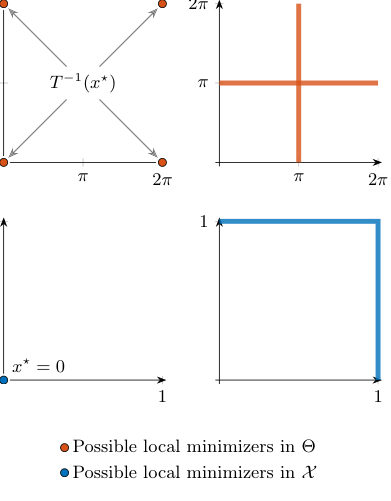
<figcaption class="paper-figure-caption"><b>Fig 1.</b> Figure 1. Illustration of the local minimizer separation in Theorem 3, shown in n = 2 dimensions. For α(G) &lt; k, the local minimizer x⋆= 0 lifts to T −1(0) = {0, 2π}2. For α(G) ≥k, the local minimizers lie on the highlighted areas. Here, Θ = [0, 2π]2 and X = [0, 1]2.</figcaption>
</figure>
<figure class="paper-figure-card">
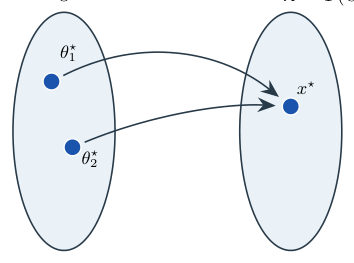
<figcaption class="paper-figure-caption"><b>Fig 2.</b> Figure 2. Illustration of the mapping between local minimizers under T as stated in Theorem 4, where x⋆= T(θ⋆ 1) = T(θ⋆ 2).</figcaption>
</figure>
</div>
<p><strong>Summary.</strong> This paper proves that training Variational Quantum Algorithms (VQAs) is computationally hard, showing that even finding a local minimum of the objective function is strongly NP-hard. The authors achieve this by reducing the problem from the known hard Stable Set problem to the minimization of a trigonometric polynomial, which is then mapped directly onto a VQA training objective. This establishes a fundamental worst-case computational barrier for variational quantum optimization.</p>
<p><strong>Why it may be interesting.</strong> This work provides a fundamental theoretical barrier, suggesting that even local optimization in VQAs is computationally intractable in the worst case, which is crucial for understanding the limits of near-term quantum computation.</p>
<details>
<summary>Detailed structure</summary>
<p><strong>Main problem.</strong> The paper investigates the computational hardness of training Variational Quantum Algorithms (VQAs), specifically focusing on the difficulty of finding local minima of the training objective function.</p>
<p><strong>Main result.</strong> It proves that finding a local minimum of a VQA training objective, or even approximating a point near it, is strongly NP-hard in the worst case.</p>
<p><strong>Method.</strong> The proof uses a polynomial-time reduction from the Stable Set problem, transforming the hard combinatorial optimization problem into the minimization of a Hermitian trigonometric polynomial, which is then mapped to the VQA objective function.</p>
<p><strong>Model / system.</strong> The model is the VQA, which trains parameterized quantum circuits by minimizing an objective function $F(	heta) = \langle 0|U(	heta)^\dagger H U(	heta)|0
angle$. The hardness is shown even for simple circuits using single-qubit rotations and commuting observables.</p>
<p><strong>Key observables.</strong> The training objective function $F(	heta)$, the location of local minimizers $   heta^*$, and the $\ell_p$-distance to these minimizers.</p>
<p><strong>Important parameters / regimes.</strong> The circuit parameters $    heta \in \mathbb{R}^n$, the distance metric $\ell_p$ ($p \ge 1$), and the size of the graph $G$ used in the reduction.</p>
<p><strong>Assumptions / limitations.</strong> The hardness result is established for the worst-case scenario, and the proof relies on a dichotomy related to the stable set size $\alpha(G)$ versus a parameter $k$.</p>
<p><strong>Figures summary.</strong> Figure 1 illustrates the separation of possible local minimizers in the parameter space for the hard trigonometric polynomial instance, and Figure 2 shows the mapping between local minimizers under the trigonometric substitution $T(	heta)$.</p>
<p><strong>Paper structure.</strong> The paper establishes the computational barrier by first reducing the Stable Set problem to minimizing a Hermitian trigonometric polynomial, and then constructing an explicit quantum circuit whose VQA training objective reproduces this hard instance.</p>
</details>
<details>
<summary>Abstract</summary>
<p>Variational quantum algorithms (VQAs) generally rely on classical optimization to train parameterized quantum circuits. This training seeks to minimize an objective function, and its efficiency is central to the practical success of these algorithms. However, globally minimizing such training objectives over the circuit parameters is known to be $\mathsf{NP}$-hard, limiting the prospect of general guarantees for efficient training. In this Letter, we prove that even the weaker task of finding a local minimum of such VQA training objectives is strongly $\mathsf{NP}$-hard, including when the objective admits efficient classical evaluation. Moreover, we show that this hardness persists even for the task of finding a parameter vector within $\ell_p$-distance strictly less than $π/2$ of some local minimizer, for every $p\geq 1$. Our central technical result is that approximating a local minimizer of a Hermitian trigonometric polynomial is strongly $\mathsf{NP}$-hard. By explicitly constructing quantum circuits whose training objectives reproduce these hard instances, we obtain a polynomial-time reduction to VQA training. Our results establish a fundamental computational barrier to variational quantum training: even reaching the vicinity of a local minimum remains hard in the worst case.</p>
</details>
<p><sub><a href="#top">↑ back to top</a></sub></p>

<p><a id="paper-2610.05669"></a></p>
<h3 id="universal-improvement-of-channel-fidelity-via-entanglement-assistance"><a href="http://arxiv.org/abs/2610.05669v1">Universal Improvement of Channel Fidelity via Entanglement Assistance</a></h3>
<p><strong>Authors:</strong> Xinan Chen, Eric Chitambar<br>
<strong>Type:</strong> theory · <strong>Category:</strong> quantum information and computing · <strong>PDF:</strong> <a href="https://arxiv.org/pdf/2610.05669v1">https://arxiv.org/pdf/2610.05669v1</a><br>
<strong>Analysis basis:</strong> full PDF text, analyzed in chunks</p>
<div class="figure-strip-hint">↔ Scroll figures horizontally</div>
<div class="paper-figures-scroll">
<figure class="paper-figure-card">
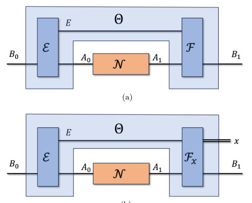
<figcaption class="paper-figure-caption"><b>Fig 1.</b> FIG. 1: A diagrammatic representation of (a) a superchannel and (b) a superinstrument.</figcaption>
</figure>
<figure class="paper-figure-card">
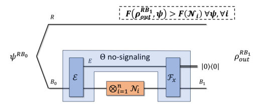
<figcaption class="paper-figure-caption"><b>Fig 2.</b> FIG. 2: The task of universal channel fidelity improvement.</figcaption>
</figure>
<figure class="paper-figure-card">
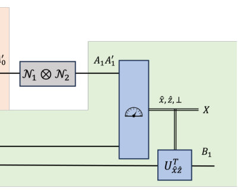
<figcaption class="paper-figure-caption"><b>Fig 3.</b> FIG. 3: Constructing entanglement-assisted superinstrument using a teleportation-based protocol.</figcaption>
</figure>
<figure class="paper-figure-card">
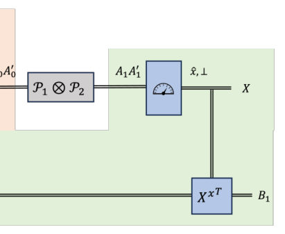
<figcaption class="paper-figure-caption"><b>Fig 4.</b> FIG. 4: Implementation of the shared-randomness protocol.</figcaption>
</figure>
<figure class="paper-figure-card">
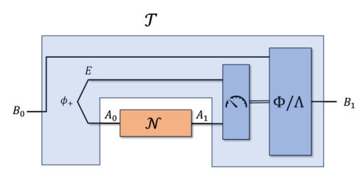
<figcaption class="paper-figure-caption"><b>Fig 5.</b> FIG. 5: A physical decomposition of the twirling superchannel. The state ϕA0E + is prepared and sent through the channel, and a POVM {P, I −P} is performed on A1E. The quantum state on B0 is sent through Φ or Λ depending on the measurement outcomes.</figcaption>
</figure>
</div>
<p><strong>Summary.</strong> This paper introduces a universal, entanglement-assisted protocol to boost the worst-case fidelity of quantum channels when multiple noisy channels are available. By constructing a specific superinstrument, the authors demonstrate that the output channel can surpass the fidelity of any individual input channel. This establishes a powerful theoretical tool for quantum communication resource enhancement.</p>
<p><strong>Why it may be interesting.</strong> This work provides fundamental theoretical tools for understanding how shared quantum resources (like entanglement) can overcome inherent noise limitations in communication protocols, which is central to quantum networking.</p>
<details>
<summary>Detailed structure</summary>
<p><strong>Main problem.</strong> The paper addresses the challenge of finding a universal method to improve the worst-case fidelity of quantum communication channels when multiple, potentially non-identical channels are used.</p>
<p><strong>Main result.</strong> It proves that an entanglement-assisted encoding and decoding strategy can universally enhance the worst-case fidelity of quantum channels beyond the fidelity of any single given channel.</p>
<p><strong>Method.</strong> The authors employ resource theory concepts, constructing an entanglement-assisted superinstrument ($\Theta$) acting on the tensor product of the input channels to achieve the enhancement.</p>
<p><strong>Model / system.</strong> The system involves quantum communication using $n$ nonidentical quantum channels $\{N_i\}$. The analysis is framed using superchannels and resource theories, particularly focusing on fidelity measures.</p>
<p><strong>Key observables.</strong> Worst-case fidelity ($F(N)$) and entanglement fidelity ($    ext{Fe}(    ext{N})$) are the primary observables used to quantify channel quality.</p>
<p><strong>Important parameters / regimes.</strong> The number of channels ($n$), the initial entanglement fidelities of the channels, and the critical fidelity threshold ($F_c$) are important parameters.</p>
<p><strong>Assumptions / limitations.</strong> The protocol requires the input channels to satisfy mild assumptions on their initial entanglement fidelities, and the analysis often relies on the ability to perform channel twirling.</p>
<p><strong>Figures summary.</strong> Figures illustrate the physical decomposition of superchannels and superinstruments, and show the general task of achieving universal channel fidelity improvement.</p>
<p><strong>Paper structure.</strong> The paper develops the problem by defining the goal of universal fidelity improvement, constructs the entanglement-assisted protocol, proves its optimality for specific channels (like depolarizing ones), and then generalizes the findings to classical channels and general resource theories.</p>
</details>
<details>
<summary>Abstract</summary>
<p>Communication using quantum channels generally requires encoding and decoding on many identical uses of a quantum channel. In practical settings, decoherence may severely limit our ability to do so, potentially rendering each channel use nonidentical. Given $n$ nonidentical channels, we present an entanglement-assisted encoding and decoding strategy that yields a channel with higher worst-case fidelity than all of the $n$ given channels. The strategy is universal, in the sense that the improvement holds regardless of what channels are given, as long as they satisfy mild assumptions on their initial entanglement fidelities. Our protocol is optimal when the given channels are depolarizing channels, and is essentially the unique one that is universal. This idea can also be extended to classical channels, where shared randomness between the sender and the receiver allows universal enhancement of the probability of correct transmission. We then consider general quantum resource theories, providing a necessary condition and a sufficient condition for the possibility of such universal improvement of quantum resources.</p>
</details>
<p><sub><a href="#top">↑ back to top</a></sub></p>

<p><a id="paper-2610.05393"></a></p>
<h3 id="walkzeta-correspondence-for-quantum-walks-on-path-graphs-a-pre-geometric-structure-implied-by-a-generalized-reflection-principle"><a href="http://arxiv.org/abs/2610.05393v1">Walk/Zeta correspondence for quantum walks on path graphs: a pre-geometric structure implied by a generalized reflection principle</a></h3>
<p><strong>Authors:</strong> Jiro Akahori, Riki Kitano, Norio Konno, Iwao Sato<br>
<strong>Type:</strong> theory · <strong>Category:</strong> other · <strong>PDF:</strong> <a href="https://arxiv.org/pdf/2610.05393v1">https://arxiv.org/pdf/2610.05393v1</a><br>
<strong>Analysis basis:</strong> full PDF text, analyzed in chunks</p>
<div class="figure-strip-hint">↔ Scroll figures horizontally</div>
<div class="paper-figures-scroll">
<figure class="paper-figure-card">
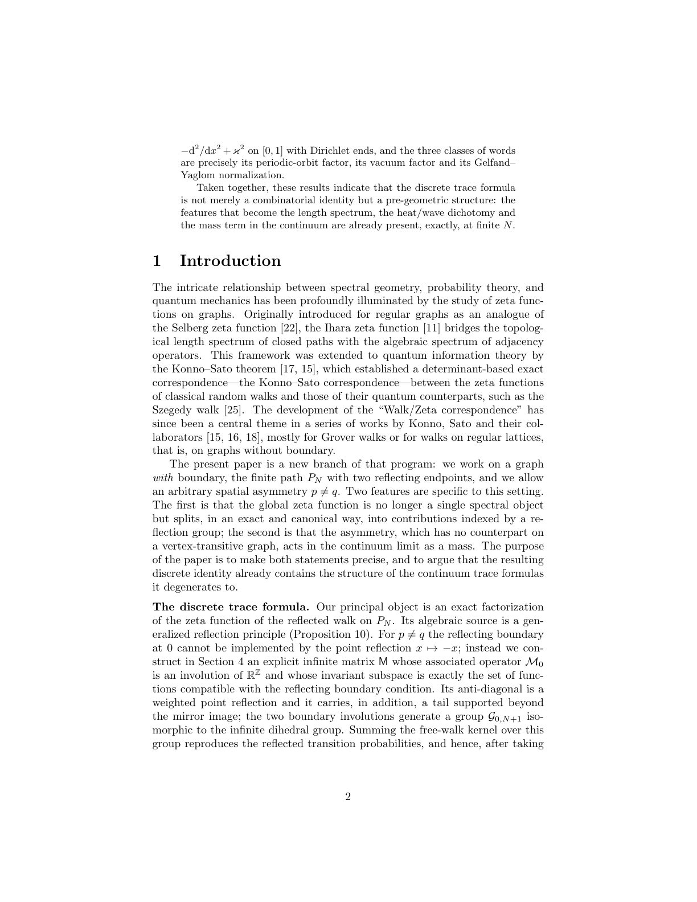
<figcaption class="paper-figure-caption"><b>Fig 1.</b> Low-resolution page preview, page 2</figcaption>
</figure>
<figure class="paper-figure-card">
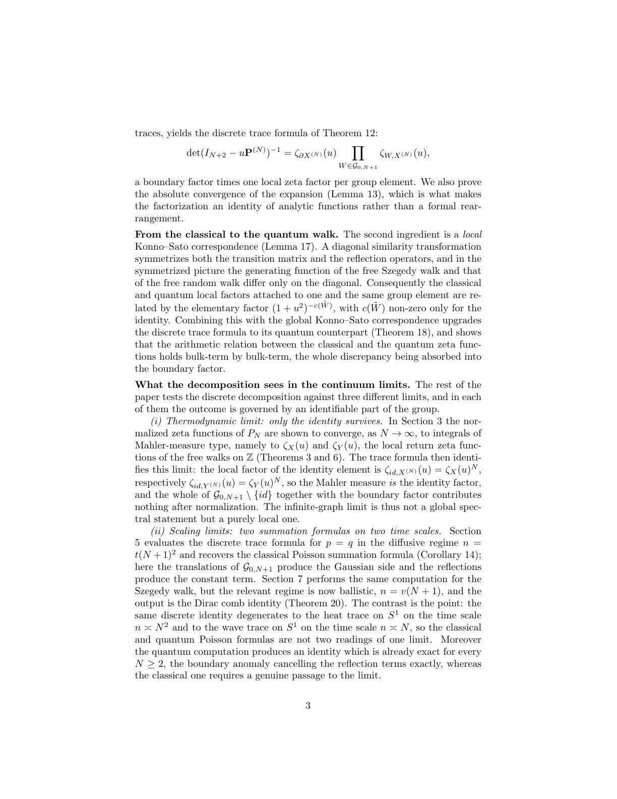
<figcaption class="paper-figure-caption"><b>Fig 2.</b> Low-resolution page preview, page 3</figcaption>
</figure>
<figure class="paper-figure-card">
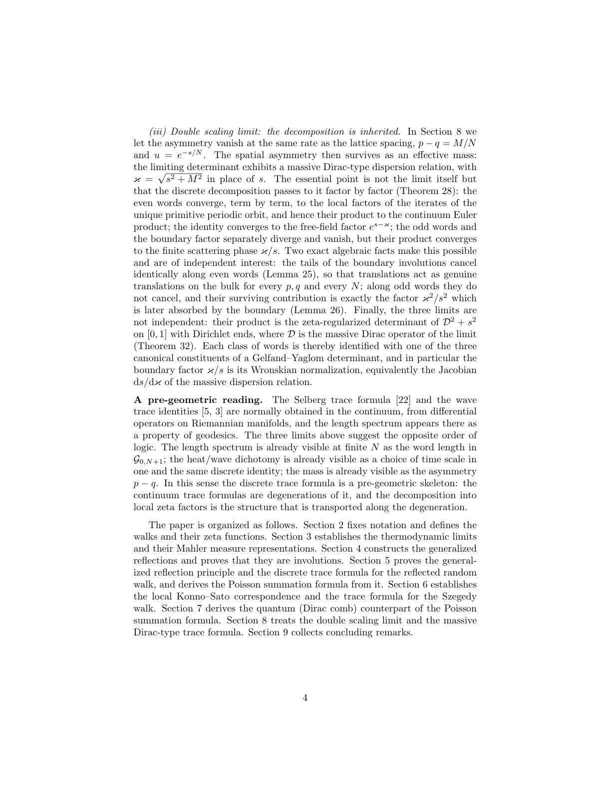
<figcaption class="paper-figure-caption"><b>Fig 3.</b> Low-resolution page preview, page 4</figcaption>
</figure>
<figure class="paper-figure-card">
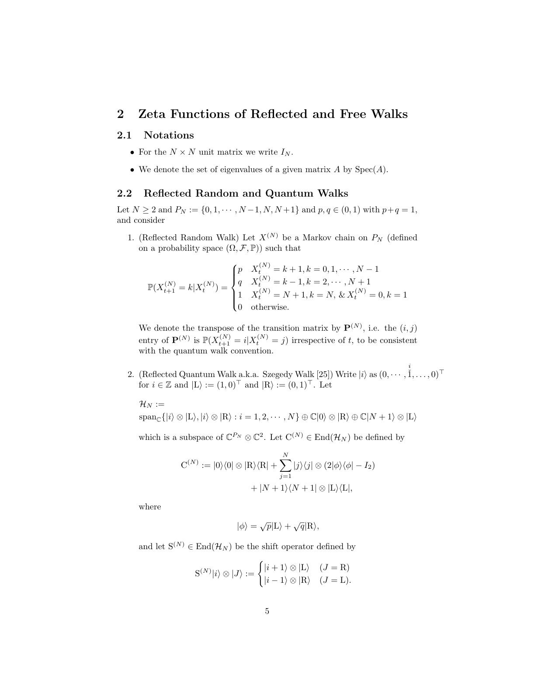
<figcaption class="paper-figure-caption"><b>Fig 4.</b> Low-resolution page preview, page 5</figcaption>
</figure>
<figure class="paper-figure-card">
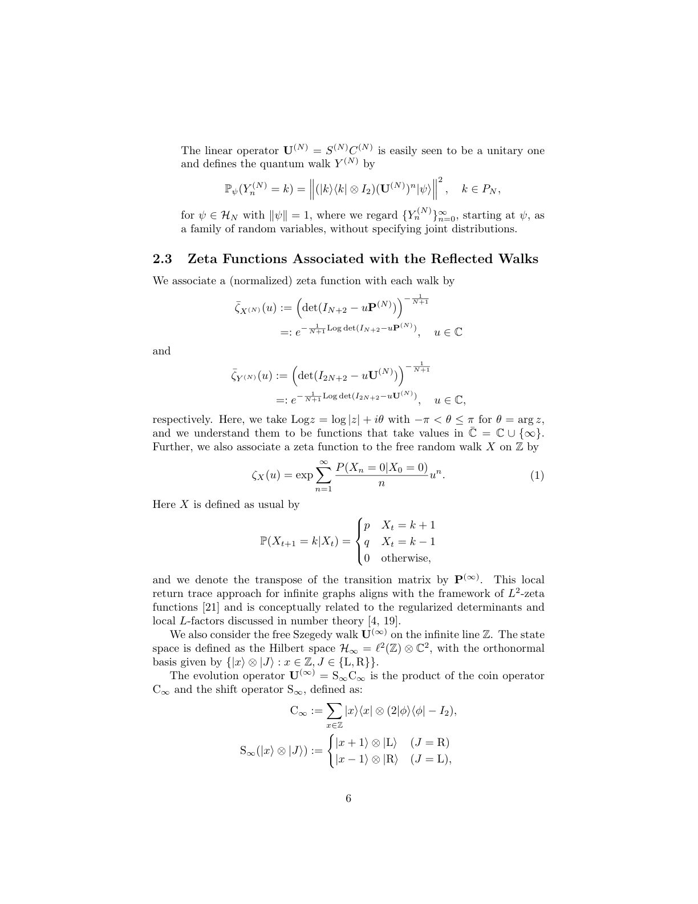
<figcaption class="paper-figure-caption"><b>Fig 5.</b> Low-resolution page preview, page 6</figcaption>
</figure>
</div>
<p><strong>Summary.</strong> This work establishes a deep mathematical correspondence between the zeta functions describing quantum walks on finite paths and continuum spectral determinants. By analyzing the factorization of the discrete zeta function in various limits, the authors show that the discrete structure acts as a 'pre-geometric skeleton' whose continuum limit is governed by the massive Dirac operator. This links quantum walk dynamics to fundamental results in spectral geometry.</p>
<p><strong>Why it may be interesting.</strong> The connection between discrete spectral identities (quantum walks) and continuous spectral theory (Dirac operators) via zeta regularization is a powerful tool for understanding spectral properties in quantum systems, linking lattice physics to continuum field theory.</p>
<details>
<summary>Detailed structure</summary>
<p><strong>Main problem.</strong> The paper investigates the 'Walk/Zeta correspondence' by establishing a relationship between the zeta functions of quantum walks on finite path graphs and continuum trace formulas.</p>
<p><strong>Main result.</strong> The discrete zeta function factorizes into components indexed by the infinite dihedral group, and in the continuum limit, this product matches the Gelfand–Yaglom determinant of a massive Dirac operator.</p>
<p><strong>Method.</strong> The authors use a generalized reflection principle and a local Konno–Sato correspondence to derive exact discrete trace formulas, which are then analyzed in various scaling limits.</p>
<p><strong>Model / system.</strong> The model is a quantum walk (Szegedy walk) and a classical random walk on a finite path graph ($P_N$) with reflecting boundaries and arbitrary spatial asymmetry. The analysis compares these discrete systems to their infinite-line counterparts.</p>
<p><strong>Key observables.</strong> Zeta functions ($\det(I - uP(N))^{-1}$), the boundary factor, and the local factors indexed by the dihedral group.</p>
<p><strong>Important parameters / regimes.</strong> Asymmetry ($p 
eq q$), the size of the graph ($N$), and scaling parameters ($s, M$) used in the continuum limit.</p>
<p><strong>Assumptions / limitations.</strong> The analysis relies on the existence of the generalized reflection principle and the local Konno–Sato correspondence to establish the factorization.</p>
<p><strong>Paper structure.</strong> The paper progresses by first establishing the discrete factorization of the zeta function, then analyzing the convergence of this factorization in the thermodynamic, diffusive, and ballistic limits, culminating in the identification of the continuum limit with the massive Dirac operator determinant.</p>
</details>
<details>
<summary>Abstract</summary>
<p>We establish a local Konno-Sato correspondence for reflected random and Szegedy walks on a finite path graph. A generalized reflection principle, using explicit involutions rather than point reflections in the asymmetric case, yields exact zeta factorizations into a boundary factor and local factors indexed by the infinite dihedral group. After symmetrization, the classical and quantum local factors correspond for each group element. The identity contribution determines the normalized thermodynamic limits. In the symmetric case, diffusive and ballistic scalings recover the Gaussian Poisson summation formula and the Dirac comb identity, respectively. Under a double scaling of the asymmetry and spectral parameter, the quantum factorization yields a massive Dirac-type limit: nonidentity even words produce the periodic-orbit factor, the identity produces the free-field factor, and odd words together with the boundary produce a finite boundary correction.</p>
</details>
<p><sub><a href="#top">↑ back to top</a></sub></p>

<p><a id="paper-2610.06176"></a></p>
<h3 id="what-does-it-cost-to-simulate-a-quantum-sentence-classifier-an-energy-and-compute-perspective-on-near-term-qnlp"><a href="http://arxiv.org/abs/2610.06176v1">What Does It Cost to Simulate a Quantum Sentence Classifier? An Energy and Compute Perspective on Near-Term QNLP</a></h3>
<p><strong>Authors:</strong> Kishlay Kashyap, Sandipan Ganguly<br>
<strong>Type:</strong> both · <strong>Category:</strong> quantum information and computing · <strong>PDF:</strong> <a href="https://arxiv.org/pdf/2610.06176v1">https://arxiv.org/pdf/2610.06176v1</a><br>
<strong>Analysis basis:</strong> full PDF text, analyzed in chunks</p>
<div class="figure-strip-hint">↔ Scroll figures horizontally</div>
<div class="paper-figures-scroll">
<figure class="paper-figure-card">

<figcaption class="paper-figure-caption"><b>Fig 1.</b> Figure 1: Validation accuracy against measured wall- clock time (log scale). Configurations with additional seeds are plotted as three-seed means; VQC error bars show ±1 sample standard deviation across those seeds, and the remaining points are single-seed. Horizontal lines mark random chance (0.5) and the validation ma- jority baseline (0.5092). The VQC sits at the far right of the time axis at accuracies comparable to its matched classical baselines, while the uncompressed full-TF-IDF model is both more accurate and far cheaper.</figcaption>
</figure>
<figure class="paper-figure-card">
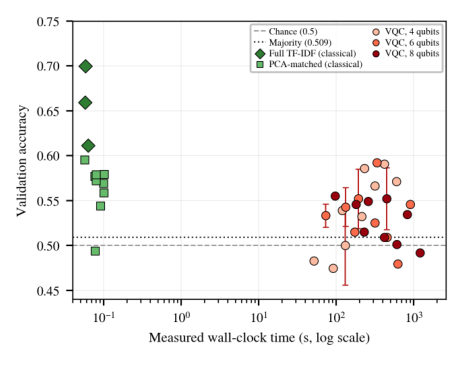
<figcaption class="paper-figure-caption"><b>Fig 2.</b> Figure 2 and Table 2 decompose VQC training time by qubit count, depth, and training-set size. Three</figcaption>
</figure>
<figure class="paper-figure-card">
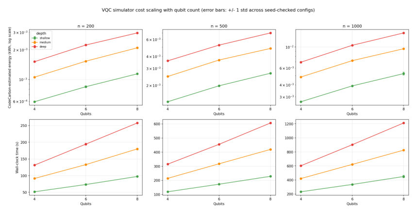
<figcaption class="paper-figure-caption"><b>Fig 3.</b> Figure 2: VQC simulator cost scaling with qubit count. Columns correspond to N = 200, 500, and 1000; colors identify circuit depth. The top row shows CodeCarbon-estimated energy and the bottom row measured wall-clock time; the rows carry nearly the same information because estimated energy is close to a constant power times elapsed time. Points are means over available seeds, and error bars (visible only for the seed-checked configurations) show ±1 standard deviation. These are within-VQC measurements for the tested simulator and CPU, not hardware- independent scaling laws.</figcaption>
</figure>
<figure class="paper-figure-card">
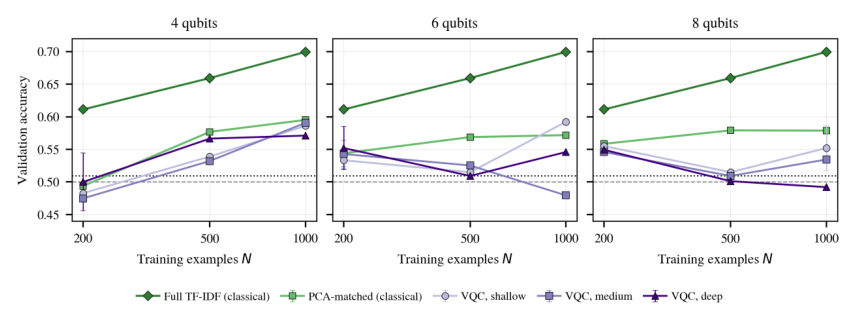
<figcaption class="paper-figure-caption"><b>Fig 4.</b> Figure 3: Validation accuracy against training-set size, one panel per qubit count. Each panel shows the full-TF-IDF reference, the PCA-matched classical baseline at that qubit count, and the three VQC depths; configurations with additional seeds are three-seed means with ±1 SD bars. The dashed line marks chance (0.5) and the dotted line the majority baseline (0.5092).</figcaption>
</figure>
<figure class="paper-figure-card">
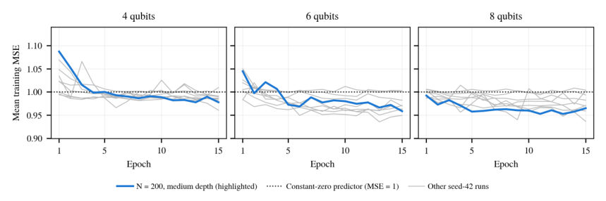
<figcaption class="paper-figure-caption"><b>Fig 5.</b> Figure 4: Per-epoch mean training loss for the 27 seed-42 VQC runs, one panel per qubit count (all three training-set sizes and depths in each panel; the N = 200, medium-depth run is highlighted). The y-axis is shared across panels. The dotted line is the loss of a constant-zero predictor on balanced ±1 labels; across all 39 VQC rows the final-epoch loss lies between 0.93 and 1.01.</figcaption>
</figure>
</div>
<p><strong>Summary.</strong> This paper rigorously measures the computational cost of running a Variational Quantum Classifier for sentiment analysis, comparing it to classical methods. The key finding is that the VQC training is vastly slower than the classical baseline without providing a reliable, statistically significant accuracy improvement. The work serves as a cautionary feasibility study on the current resource overhead of QNLP simulations.</p>
<p><strong>Why it may be interesting.</strong> While focused on NLP, the detailed analysis of resource scaling (time vs. qubits/depth) and the explicit comparison of simulation overhead against classical computation is highly relevant to understanding the resource requirements for any quantum algorithm implementation.</p>
<details>
<summary>Detailed structure</summary>
<p><strong>Main problem.</strong> The paper assesses the practical computational cost (energy and compute) associated with running near-term Quantum Natural Language Processing (QNLP) experiments on classical simulators.</p>
<p><strong>Main result.</strong> The Variational Quantum Classifier (VQC) training is found to be significantly slower (thousands of times) than its matched classical baseline, and this increased cost is not offset by a reliable, statistically significant accuracy advantage.</p>
<p><strong>Method.</strong> The authors measured wall-clock time and estimated energy/CO2 for training a VQC on SST-2 sentiment classification across a grid of 27 configurations, comparing results against classical logistic regression baselines.</p>
<p><strong>Model / system.</strong> The model is a Variational Quantum Classifier (VQC) implemented using PennyLane's state-vector simulator. It processes text features (via TF-IDF/PCA) encoded into qubits, followed by a parameterized quantum circuit structure.</p>
<p><strong>Key observables.</strong> Wall-clock time, Time ratio (VQC time / classical time), Accuracy ($\Delta$), and CodeCarbon estimated energy/CO2 emissions.</p>
<p><strong>Important parameters / regimes.</strong> Qubit counts (4, 6, 8), Circuit depths (1-3 layers), Training set sizes ($N=200, 500, 1000$).</p>
<p><strong>Assumptions / limitations.</strong> The study is limited to a single dataset, representation, ansatz, simulator, and CPU environment, making it a feasibility measurement rather than a general verdict on QNLP.</p>
<p><strong>Figures summary.</strong> Figures compare VQC validation accuracy vs. training set size, and show the training loss over epochs, illustrating the performance gap between VQC and classical methods.</p>
<p><strong>Paper structure.</strong> The paper establishes the need to measure simulator cost in QNLP, details the experimental setup (VQC vs. classical baselines on SST-2), presents the quantitative results on cost scaling and accuracy comparison, and concludes with limitations.</p>
</details>
<details>
<summary>Abstract</summary>
<p>Near-term quantum natural language processing (QNLP) experiments often run on classical simulators, so simulator cost is part of the field's practical compute burden, yet accuracy tables do not show it. We measure that cost for a variational quantum classifier (VQC) on binary SST-2 sentiment classification, using PennyLane's state-vector simulator over a controlled grid of 27 configurations: three balanced training-set sizes (N = 200, 500, 1000), three qubit counts (4, 6, 8), and three circuit depths. Each VQC is compared with logistic regression on the same PCA-reduced input; full TF-IDF logistic regression gives an uncompressed reference. The VQC beats its matched baseline in 6 of 27 single-seed comparisons. After reruns at two further seeds, only 1 of these 6 keeps a positive mean advantage larger than its paired seed-to-seed variability, and paired tests on the fixed validation set do not establish it. VQC training is 886-21,127 times slower in measured wall-clock time than the matched classical fit (median 3,158 times); going from 4 to 8 qubits roughly doubles simulator time, and within the tested range per-step cost is well approximated by a linear function of the parameter count. CodeCarbon energy and CO2 estimates are secondary: they imply an almost constant power of about 41 W, so they add little beyond runtime, and we do not build an energy ratio from them. The study is narrow (one dataset, representation, ansatz, simulator, and CPU environment) and is a reproducible feasibility measurement, not a general verdict on QNLP.</p>
</details>
<p><sub><a href="#top">↑ back to top</a></sub></p>

<p><a id="paper-2610.06142"></a></p>
<h3 id="when-equivalent-quantum-circuits-lose-synthesis-choices"><a href="http://arxiv.org/abs/2610.06142v1">When Equivalent Quantum Circuits Lose Synthesis Choices</a></h3>
<p><strong>Authors:</strong> Boshuai Ye, Peng Liang, Arif Ali Khan<br>
<strong>Type:</strong> theory · <strong>Category:</strong> quantum information and computing · <strong>PDF:</strong> <a href="https://arxiv.org/pdf/2610.06142v1">https://arxiv.org/pdf/2610.06142v1</a><br>
<strong>Analysis basis:</strong> full PDF text, analyzed in chunks</p>
<div class="figure-strip-hint">↔ Scroll figures horizontally</div>
<div class="paper-figures-scroll">
<figure class="paper-figure-card">
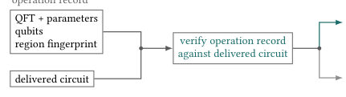
<figcaption class="paper-figure-caption"><b>Fig 1.</b> Fig. 1. The QFT example. (A) A direct OpenQASM 3 round trip preserves the computation but removes synthesis availability. (B) Verified reconstructs the operation only if the record matches the delivered circuit.</figcaption>
</figure>
<figure class="paper-figure-card">
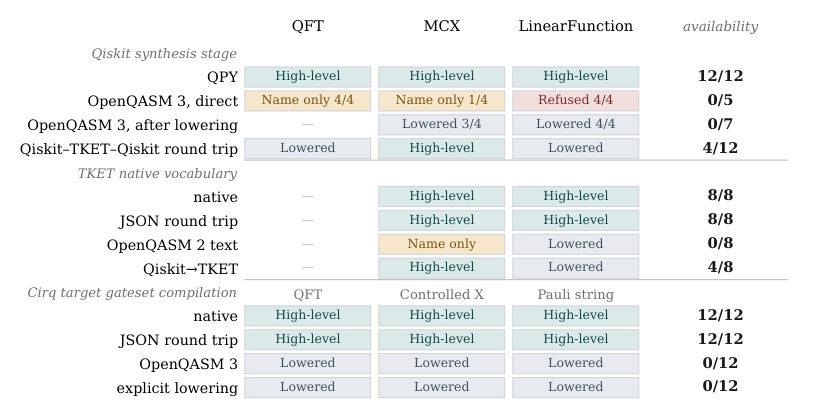
<figcaption class="paper-figure-caption"><b>Fig 2.</b> Fig. 2. Synthesis availability in the representation-route study. For cell labels, see Section 4.2.2; within-family fractions use the attempted instances, the rightmost availability denominator counts only instances delivered at that step, and Refused marks delivery failures. Each Cirq cell summarizes widths 4, 6, 8, and 10 qubits, which have identical outcomes.</figcaption>
</figure>
<figure class="paper-figure-card">
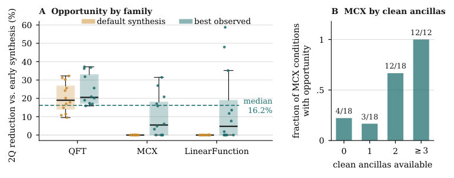
<figcaption class="paper-figure-caption"><b>Fig 3.</b> Fig. 3. Optimization opportunity. (A) Two-qubit reduction relative to the early-synthesis reference; points are the 36 conditions, boxes show quartiles and median, and the dashed line marks the median reduction of the best-observed reference. (B) Fraction of MCX conditions with an opportunity in the resource sweep.</figcaption>
</figure>
</div>
<p><strong>Summary.</strong> This paper investigates how quantum circuits lose access to high-level synthesis optimizations when their representation changes across different compilers or formats. The authors demonstrate that merely ensuring the computation remains mathematically equivalent is insufficient, as this loss can lead to significantly suboptimal gate counts. They introduce 'Verified,' a novel mechanism that tracks and restores these lost synthesis choices, improving compiler robustness.</p>
<p><strong>Why it may be interesting.</strong> It highlights a critical, practical gap in quantum software stacks: the gap between mathematical equivalence and compiler optimization potential, which is vital for designing efficient quantum algorithms.</p>
<details>
<summary>Detailed structure</summary>
<p><strong>Main problem.</strong> Quantum compilers can lose the ability to apply high-level synthesis optimizations when quantum circuits undergo representation changes (like serialization or format conversion).</p>
<p><strong>Main result.</strong> Functional equivalence is insufficient; the loss of synthesis availability can significantly increase circuit costs, and a new 'Verified' mechanism is proposed to restore these lost synthesis choices.</p>
<p><strong>Method.</strong> The authors conducted controlled experiments and repository analyses across major quantum SDKs (Qiskit, TKET, Cirq) by simulating various representation change routes.</p>
<p><strong>Model / system.</strong> The study focuses on abstract quantum circuits and the compilation process itself, using high-level operations like QFT and MCX gates as test cases.</p>
<p><strong>Key observables.</strong> Synthesis availability, two-qubit gate count, circuit depth, and the success rate of operation record reconstruction.</p>
<p><strong>Important parameters / regimes.</strong> The specific quantum compilers (Qiskit, TKET, Cirq) and the type of representation change (OpenQASM 3 round trip, QPY serialization, etc.).</p>
<p><strong>Assumptions / limitations.</strong> The primary assumption is that preserving functional equivalence is not enough; the compiler must also preserve the <em>potential</em> for high-level synthesis.</p>
<p><strong>Figures summary.</strong> Figures illustrate how direct OpenQASM 3 round trips lose synthesis availability, while the proposed 'Verified' mechanism successfully restores it, often showing a reduction in gate count compared to unverified routes.</p>
<p><strong>Paper structure.</strong> The paper identifies the problem of synthesis loss during representation changes, analyzes this loss across multiple compiler toolchains and routes, quantifies the resulting circuit cost increases, and finally introduces and validates the 'Verified' recovery mechanism.</p>
</details>
<details>
<summary>Abstract</summary>
<p>Quantum compilers synthesize high-level operations, such as the quantum Fourier transform and multi-controlled X gates, into gate-level circuits. Across compilation stages, a circuit may be serialized, exchanged as OpenQASM, converted between compilers, or lowered to gates. These representation changes can preserve computation while removing the high-level operation itself, leaving the receiving compiler unable to apply a requested synthesis method. We call this loss synthesis availability. We study synthesis availability in Qiskit, TKET, and Cirq through controlled experiments, repository analysis, circuits captured from project tests, and a Munich Quantum Toolkit pipeline. Synthesis availability survives serialization when deserialization restores the high-level operation and survives compiler conversion only when the receiving compiler supports that operation. It does not survive the evaluated OpenQASM routes. After a direct OpenQASM 3 round trip, requested synthesis has no effect in all 360 delivered conditions even though compilation succeeds. In the MQT pipeline, OpenQASM 2 interchange increases the two-qubit gate count by 37.2 percent for an eight-qubit Grover circuit. We also introduce Verified, which records high-level operations before a representation change and reconstructs them only when a check confirms that the record still matches the delivered circuit. Verified restores requested synthesis in all 830 recovery runs, with median verification times from 2.0 to 638 ms per operation family. The check rejects every stale record but also some valid records. These results show that preserving functional equivalence alone is insufficient when later synthesis choices depend on retained high-level structure.</p>
</details>
<p><sub><a href="#top">↑ back to top</a></sub></p>

<p><a id="paper-2610.06402"></a></p>
<h3 id="when-is-the-clifford-hierarchy-generalized-semi-clifford"><a href="http://arxiv.org/abs/2610.06402v1">When is the Clifford hierarchy generalized semi-Clifford?</a></h3>
<p><strong>Authors:</strong> Rongbiao Thomas Wang, Bobby Zixuan Zhang<br>
<strong>Type:</strong> theory · <strong>Category:</strong> quantum information and computing · <strong>PDF:</strong> <a href="https://arxiv.org/pdf/2610.06402v1">https://arxiv.org/pdf/2610.06402v1</a><br>
<strong>Analysis basis:</strong> full PDF text, analyzed in chunks</p>
<div class="figure-strip-hint">↔ Scroll figures horizontally</div>
<div class="paper-figures-scroll">
<figure class="paper-figure-card">
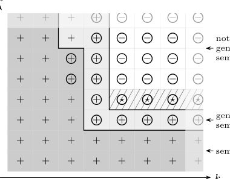
<figcaption class="paper-figure-caption"><b>Fig 1.</b> FIG. 1. At position (k, n), a + sign represents that Ck(n) belongs to the indicated class and a −sign represents that Ck(n) is not generalized semi-Clifford. For the cases of n = 4 and k ≥5, the ⋆sign represents a partial answer where gates defined over Q(i) up to scalar are generalized semi-Clifford.</figcaption>
</figure>
<figure class="paper-figure-card">
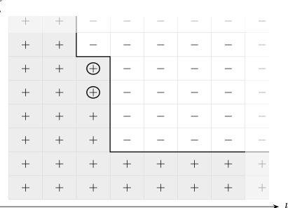
<figcaption class="paper-figure-caption"><b>Fig 2.</b> FIG. 2. Ck(n) ⊆SC(n) if and only if (k, n) lies in a region marked +.</figcaption>
</figure>
<figure class="paper-figure-card">
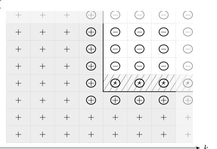
<figcaption class="paper-figure-caption"><b>Fig 3.</b> FIG. 3. Ck(n) ⊆GSC(n) if (k, n) lies in a region marked + and Ck(n) ̸⊆GSC(n) if (k, n) lies in a region marked −. For n = 4 and k ≥5, gates defined over Q(i) up to scalar are generalized semi-Clifford.</figcaption>
</figure>
<figure class="paper-figure-card">
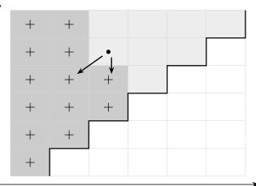
<figcaption class="paper-figure-caption"><b>Fig 4.</b> FIG. 4. The induction process of Theorem 12, where r = cond(U) is the conductor and k the level of U ∈Ck(3).</figcaption>
</figure>
<figure class="paper-figure-card">
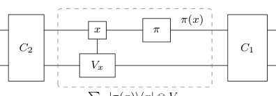
<figcaption class="paper-figure-caption"><b>Fig 5.</b> FIG. 5. The decomposition of a gate U ∈Ck(n) predicted by Conjecture 3.</figcaption>
</figure>
</div>
<p><strong>Summary.</strong> This paper rigorously classifies when the Clifford hierarchy of quantum gates, $C_k(n)$, belongs to the semi-Clifford or generalized semi-Clifford gate sets. Using advanced group theory and symplectic geometry, the authors derive necessary and sufficient conditions based on the hierarchy level $k$ and qubit number $n$. The work provides deep structural insights into the mathematical boundaries of quantum gate sets.</p>
<p><strong>Why it may be interesting.</strong> The rigorous classification of gate sets within the Clifford hierarchy is fundamental for understanding the computational power and limitations of quantum computation models, which is highly relevant to quantum information theory.</p>
<details>
<summary>Detailed structure</summary>
<p><strong>Main problem.</strong> The paper investigates the mathematical conditions under which the Clifford hierarchy of quantum gates, $C_k(n)$, is contained within the sets of semi-Clifford ($    ext{SC}(n)$) or generalized semi-Clifford ($  ext{GSC}(n)$) gates.</p>
<p><strong>Main result.</strong> It establishes precise conditions for $    ext{SC}(n)$ membership (e.g., $k\le2$, $n\le2$, or $k=3, n\le6$) and provides structural characterizations and counterexamples showing when $C_k(n)$ fails to be $    ext{GSC}(n)$ for large $k$ and $n$.</p>
<p><strong>Method.</strong> The analysis employs group theory, symplectic structures over $\mathbb{F}_2$, and conductor descent arguments to constrain the structure of the unitary gates.</p>
<p><strong>Model / system.</strong> The model is the Clifford hierarchy, $C_k(n)$, which describes a sequence of increasingly complex sets of quantum gates acting on $n$ qubits, related to the Pauli group $P(n)$.</p>
<p><strong>Key observables.</strong> Membership of the gate set $C_k(n)$ in $   ext{SC}(n)$ or $    ext{GSC}(n)$; the conductor ($ ext{cond}(U)$) of a gate $U$.</p>
<p><strong>Important parameters / regimes.</strong> Hierarchy level $k$ and number of qubits $n$.</p>
<p><strong>Assumptions / limitations.</strong> The analysis relies on mapping gates to vectors in $\mathbb{F}_2^{2n}$ and using Lagrangian subspaces to characterize $ ext{GSC}(n)$.</p>
<p><strong>Figures summary.</strong> Figures provide tabular summaries of the $(k, n)$ conditions for $ ext{SC}(n)$ and $   ext{GSC}(n)$ membership, and illustrate the inductive process using conductor descent.</p>
<p><strong>Paper structure.</strong> The paper progresses by first characterizing $ ext{SC}(n)$ membership, then tackling the more general $    ext{GSC}(n)$ membership using conductor arguments, and finally constructing explicit counterexamples (like $U_\xi$) to show when the hierarchy escapes the $   ext{GSC}$ group.</p>
</details>
<details>
<summary>Abstract</summary>
<p>We study semi-Clifford and generalized semi-Clifford structures in the Clifford hierarchy as a function of hierarchy level $k$ and qubit number $n$. We show that $\mathcal{C}_k(n)$ is semi-Clifford if and only if $k\le2$, $n\le2$, or $k=3$ and $n\le6$. We also establish that $\mathcal{C}_k(n)$ is generalized semi-Clifford when $k\le4$ or $n\le3$ and construct counterexamples when $k,n \geq 5$. For $n=4$ and $k\ge5$, we show that every gate defined over $\mathbb{Q}(i)$ up to a scalar is generalized semi-Clifford, reduce the general case to a single level, and propose a strategy to prove our conjecture that $\mathcal{C}_k(n)$ is generalized semi-Clifford if and only if $k\le4$ or $n\le4$. Lastly, we go beyond this structure by introducing $n_c$-generalized semi-Clifford gates, which we show are exactly the gates of the form $\sum_x|π(x)\rangle\langle x|\otimes V_x$ up to Clifford gates on both sides, where $π$ permutes the computational basis states of $n_c$ control qubits. We conjecture that for $k\ge3$ every gate in $\mathcal{C}_k(n)$ has this form for some $n_c\ge1$ with every $V_x\in\mathcal{C}_{k-3}(n-n_c)$, refining the conjecture of Zeng, Chen, and Chuang.</p>
</details>
<p><sub><a href="#top">↑ back to top</a></sub></p>

<p><a id="paper-2610.04897"></a></p>
<h3 id="wlpa-a-network-management-framework-for-allocating-scarce-quantum-safe-link-postures-under-weakest-link-exposure"><a href="http://arxiv.org/abs/2610.04897v1">WLPA: A Network Management Framework for Allocating Scarce Quantum-Safe Link Postures under Weakest-Link Exposure</a></h3>
<p><strong>Authors:</strong> Bhanwar Gupta, Sanjeev Rana<br>
<strong>Type:</strong> both · <strong>Category:</strong> quantum information and computing · <strong>PDF:</strong> <a href="https://arxiv.org/pdf/2610.04897v1">https://arxiv.org/pdf/2610.04897v1</a><br>
<strong>Analysis basis:</strong> full PDF text, analyzed in chunks</p>
<div class="figure-strip-hint">↔ Scroll figures horizontally</div>
<div class="paper-figures-scroll">
<figure class="paper-figure-card">
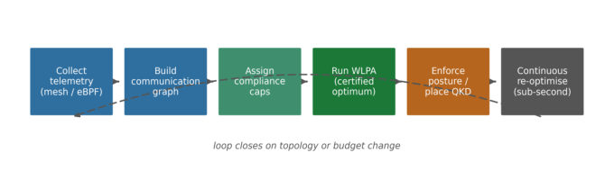
<figcaption class="paper-figure-caption"><b>Fig 1.</b> Figure 1: WLPA’s operational loop: identify active links and volumes, assign compliance caps, run the closed-form allocator, deploy starting from the binding link, and re-run on topology or budget change. The allocation step is implemented and validated (Sections 4–5.7); the deploy/enforce step is architected but not built or measured on a live system (Section 6.2)</figcaption>
</figure>
<figure class="paper-figure-card">

<figcaption class="paper-figure-caption"><b>Fig 2.</b> Figure 1 summarizes the framework: topology and compliance caps feed a closed-form ceiling computation, which sets the system-wide target posture; a floor-raising pass brings every active link to that target; and a breach-aware refinement spends any remaining QKD budget where it reduces breach probability most. This computational pipeline — the part inside the dashed box in Figure 1 — is what we implement and validate throughout this paper (Sections 4–5.7): it runs in O(|E| log |E|) and is fast enough to re-run whenever topology, budget, or compliance requirements change. Embedding it into a live network means closing the loop around it:</figcaption>
</figure>
<figure class="paper-figure-card">
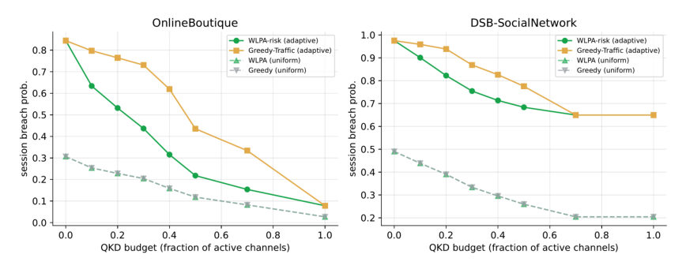
<figcaption class="paper-figure-caption"><b>Fig 3.</b> Figure 2: Job breach probability versus QKD budget under the adaptive attacker. WLPA stays below Greedy-Traffic at every interior budget</figcaption>
</figure>
<figure class="paper-figure-card">
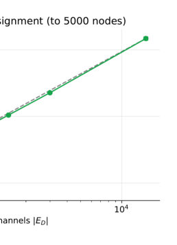
<figcaption class="paper-figure-caption"><b>Fig 4.</b> Figure 3: Runtime versus active links against an O(|E| log |E|) reference</figcaption>
</figure>
<figure class="paper-figure-card">
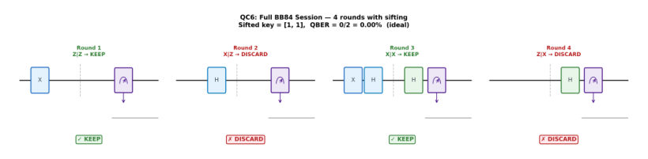
<figcaption class="paper-figure-caption"><b>Fig 5.</b> Figure 4: Four-round BB84 session circuit (sifting annotated), the protocol structure underlying both the simulated and real-hardware runs used to sanity-check p(3)</figcaption>
</figure>
</div>
<p><strong>Summary.</strong> This paper introduces WLPA, a novel, efficient framework for optimally allocating scarce quantum-safe resources like QKD across large networks. It moves beyond simple per-link security assessments by recognizing that system security is limited by the weakest link. The framework provides a mathematically rigorous, implementable solution that outperforms standard industry heuristics, especially under sophisticated, targeted attack models.</p>
<p><strong>Why it may be interesting.</strong> While focused on network engineering, the underlying mathematical structure—optimizing a global minimum subject to local resource constraints—is analogous to finding the weakest point in a quantum computation or communication chain, making the resource allocation theory relevant to quantum network security.</p>
<details>
<summary>Detailed structure</summary>
<p><strong>Main problem.</strong> Network operators must allocate scarce, high-security quantum-safe link postures (like QKD) across a distributed system, where overall security is dictated by the single weakest link.</p>
<p><strong>Main result.</strong> The authors present WLPA, an algorithm that computes the optimal weakest-link posture assignment in polynomial time, providing a rigorous framework superior to simple per-link heuristics when costs or attack models vary.</p>
<p><strong>Method.</strong> The core method is developing a closed-form, optimal decision framework (WLPA) that solves a constrained resource allocation problem, validated against integer programming models and various network topologies.</p>
<p><strong>Model / system.</strong> The system is a distributed network modeled as a graph where links ($e \in ED$) require upgrading to specific quantum-safe postures (Level 1, 2, or 3) constrained by a total QKD budget ($B$) and latency limits ($L$).</p>
<p><strong>Key observables.</strong> System security (minimum link posture), Breach Probability $B(Q)$, and the optimal achievable security level $S^\star(B, L)$.</p>
<p><strong>Important parameters / regimes.</strong> QKD Budget ($B$), Latency Budget ($L$), Link Compliance Cap ($c_e$), and the three discrete Link Posture Levels.</p>
<p><strong>Assumptions / limitations.</strong> The security derivation relies on a standard hybrid-argument bound, and the framework assumes a specific model for exploit probability schedules ($p(\ell)$) which are model-calibrated.</p>
<p><strong>Figures summary.</strong> Figures illustrate the comparison of job breach probability between WLPA and heuristic methods under varying QKD budgets, and show the near-linear runtime scaling of the WLPA algorithm.</p>
<p><strong>Paper structure.</strong> The paper establishes the weakest-link security principle, introduces WLPA as the optimal allocation algorithm, proves its correctness and complexity, presents a dichotomy showing when heuristics fail, and validates the framework across 19 diverse experimental scenarios.</p>
</details>
<details>
<summary>Abstract</summary>
<p>Network operators migrating distributed systems to post-quantum and quantum-safe cryptography face a resource-management problem: quantum key distribution (QKD) gives the strongest guarantee available but is hardware-scarce and costly, so only a fraction of a deployment's links can receive it. Default practice -- ranking links by traffic or centrality and upgrading the top scorers -- optimizes each link in isolation, while a distributed job's real security is set by whichever active link ends up weakest. We present WLPA (Weakest-Link Posture Assignment), an implementation-ready decision framework and algorithm for allocating scarce quantum-safe postures under hardware, latency, and compliance constraints. WLPA computes the optimal weakest-link posture in closed form and returns an assignment in O(|E| log |E|) time -- 125 ms for a 20,000-link network on a laptop -- with a breach-aware refinement matching an exact integer program under common conditions. Our central contribution is a dichotomy telling operators exactly when existing per-link heuristics already match this optimum and when they systematically fail: under constant upgrade cost and uniform traffic-driven risk the two coincide exactly; once costs vary or an adversary concentrates on weak targets, heuristics leave the weakest link unprotected, unboundedly. We validate WLPA across 19 experiments: four microservice topologies, a real enterprise network (SNAP email-Eu-core), a post-quantum latency benchmark, a Qiskit BB84 simulation and a real-hardware BB84 run on IBM's ibm_marrakesh processor, checks against real production traffic traces, a CVE-calibrated correlated-compromise study, Bayesian uncertainty quantification, and seven baseline methods. A concrete-security reduction grounds the framework as theoretical foundation, not primary contribution.</p>
</details>
<p><sub><a href="#top">↑ back to top</a></sub></p>
</details>
<h2 id="secondary-cond-mat-archives">Secondary cond-mat archives</h2>
<p><em>Papers from cond-mat.mtrl-sci, mes-hall, other, soft, supr-con. These archives are de-prioritized — they appear at the end regardless of relevance score.</em></p>
<h3 id="relevant-in-secondary-archives-31">Relevant in secondary archives (31)</h3>

<p><a id="paper-2610.05710"></a></p>
<h3 id="chirality-induced-spin-selectivity-as-a-nonequilibrium-effect-a-unified-test-of-competing-mechanisms"><a href="http://arxiv.org/abs/2610.05710v1">Chirality-induced spin selectivity as a nonequilibrium effect: a unified test of competing mechanisms</a></h3>
<p><strong>Authors:</strong> Swagata Acharya, Mark van Schilfgaarde<br>
<strong>Type:</strong> theory · <strong>Category:</strong> other · <strong>PDF:</strong> <a href="https://arxiv.org/pdf/2610.05710v1">https://arxiv.org/pdf/2610.05710v1</a><br>
<strong>Analysis basis:</strong> full PDF text, analyzed in chunks
<strong>Topic relevance:</strong> 🔥 <code>Keldysh / 2PI / non-Gaussian methods</code> <strong>4/5</strong> · <code>driven-dissipative phase transition</code> <strong>3/5</strong> · <code>methods for driven-dissipative</code> <strong>3/5</strong> · <code>non-equilibrium universality</code> <strong>3/5</strong> · <code>analog quantum simulation</code> <strong>1/5</strong> · <code>correlated / nonlocal dissipation</code> <strong>1/5</strong> · <code>quantum measurements</code> <strong>1/5</strong></p>
<div class="figure-strip-hint">↔ Scroll figures horizontally</div>
<div class="paper-figures-scroll">
<figure class="paper-figure-card">
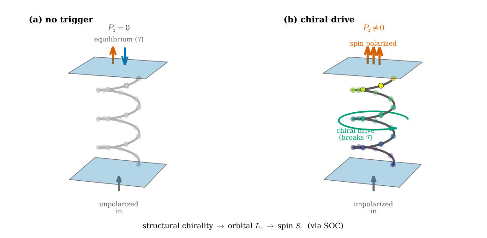
<figcaption class="paper-figure-caption"><b>Fig 1.</b> FIG. 1. Concept. (a) In equilibrium a chiral conductor between two nonmagnetic leads carries no spin polarization: time- reversal symmetry forces Pz = 0, and equal up- and down-spin flows cancel. (b) A chiral drive (a coherent vibration, a bias, or a magnetic contact) breaks time-reversal symmetry and the transmitted current becomes spin polarized, Pz ̸= 0. Structural chirality produces an orbital moment Lz, which spin-orbit coupling converts into spin Sz.</figcaption>
</figure>
<figure class="paper-figure-card">
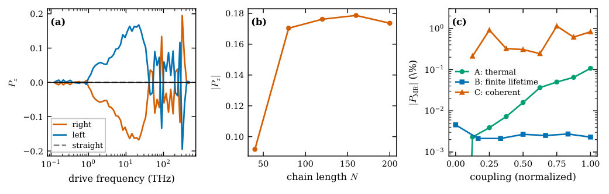
<figcaption class="paper-figure-caption"><b>Fig 2.</b> FIG. 2. Single-orbital model. (a) Intrinsic polarization Pz versus drive frequency Ω(THz scale; the calculation uses Ω/t) for right- and left-handed helices (N = 200) and a straight control, from the coherent Floquet drive [Eq. (3)]. (b) Pz versus chain length. (c) Magnetoresistance PMR versus normalized electron-phonon coupling for the same vibration treated three ways (Table I): weak thermal phonon (A, SCBA), the same with finite phonon spectral linewidth η (B, SCBA), and the coherent drive (C, Floquet).</figcaption>
</figure>
<figure class="paper-figure-card">
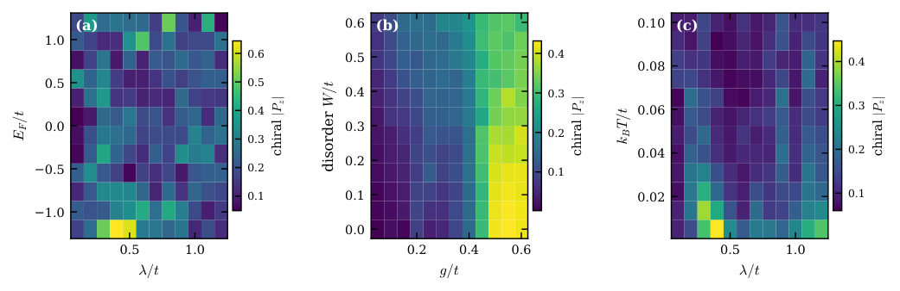
<figcaption class="paper-figure-caption"><b>Fig 3.</b> FIG. 3. Single-orbital model, coherent Floquet drive. Parameter dependence of Pz, averaged over disorder and energy. Left: SOC versus Fermi level. Middle: drive strength versus disorder. Right: SOC versus temperature at fixed drive. The straight control is unpolarized in every panel.</figcaption>
</figure>
<figure class="paper-figure-card">
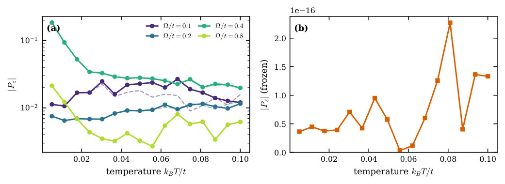
<figcaption class="paper-figure-caption"><b>Fig 4.</b> FIG. 4. Temperature (single-orbital model). Left: coherent Floquet drive, |Pz(T)| for several vibration frequencies, with the drive scaled by the thermal factor (solid) and held fixed (dashed). Right: a frozen, thermally distorted static lattice (elastic), |Pz(T)|.</figcaption>
</figure>
<figure class="paper-figure-card">
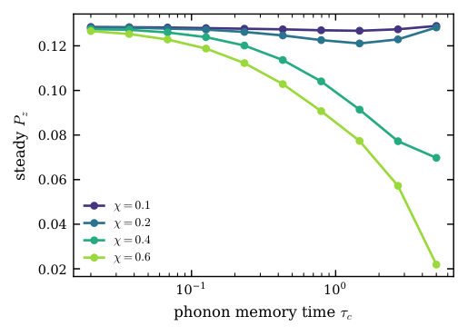
<figcaption class="paper-figure-caption"><b>Fig 5.</b> FIG. 5. Single-orbital model, GKBA, N = 12. Steady spin accumulation Pz versus vibration memory time τc, at weak and at strong coupling.</figcaption>
</figure>
</div>

<p><strong>Summary.</strong> This paper provides a unified theoretical framework to understand Chirality-Induced Spin Selectivity (CISS), proving that the effect requires breaking both parity and time-reversal symmetry. By analyzing various non-equilibrium transport regimes, the authors demonstrate that coherent chiral vibrations are essential for generating measurable spin polarization, providing a crucial diagnostic tool for future spintronic materials.</p>
<p><strong>Why it may be interesting.</strong> This work directly addresses non-equilibrium spin transport in mesoscopic chiral systems, which is highly relevant to understanding spin-orbit coupling effects in molecular electronics and spintronics, bridging concepts from quantum optics and condensed matter theory.</p>
<details>
<summary>Detailed structure</summary>
<p><strong>Main problem.</strong> The fundamental origin of Chirality-Induced Spin Selectivity (CISS)—the spin polarization of electrons by nonmagnetic chiral systems without external magnetic fields—remains theoretically unsettled.</p>
<p><strong>Main result.</strong> The authors establish a strict selection rule: measurable CISS signals must be time-reversal odd and vanish near equilibrium, proving structural chirality alone is insufficient. They show that coherent chiral vibrations are necessary to generate substantial, handedness-reversing spin polarization.</p>
<p><strong>Method.</strong> The study evaluates leading theoretical mechanisms across four levels of non-equilibrium transport, ranging from coherent classical driving to fully non-Markovian quantum baths, using advanced Green's function techniques.</p>
<p><strong>Model / system.</strong> The analysis employs a minimal single-orbital tight-binding Hamiltonian on a helix, later extended to a more realistic p-orbital model to separate orbital and spin chirality. The system is driven by both coherent and incoherent phonon baths.</p>
<p><strong>Key observables.</strong> Spin polarization ($P_z$), polarization magnitude (up to 10% for coherent drive), and the reversal of polarization with handedness (Inverse-CISS).</p>
<p><strong>Important parameters / regimes.</strong> The polarization scales with an effective spin-orbit coupling (SOC), allowing comparison between heavy atoms and curved light-atom backbones.</p>
<p><strong>Assumptions / limitations.</strong> The analysis relies on modeling the system's response to various phonon coupling mechanisms and assumes the validity of the four levels of non-equilibrium transport theory.</p>
<p><strong>Figures summary.</strong> Figure 1 illustrates that equilibrium yields zero polarization due to time-reversal symmetry, while a chiral drive breaks this symmetry, generating spin polarization via the conversion of orbital angular momentum to spin via SOC.</p>
<p><strong>Paper structure.</strong> The paper systematically analyzes the CISS effect by first establishing the necessary symmetry constraints, then modeling the system using minimal and p-orbital Hamiltonians, and finally testing various non-equilibrium transport regimes (coherent vs. incoherent driving) to pinpoint the required physical mechanism.</p>
</details>
<details>
<summary>Abstract</summary>
<p>For two decades, the origin of Chirality-Induced Spin Selectivity (CISS), the spin polarization of electrons by nonmagnetic chiral systems without magnetic fields, has remained unsettled. Here, we establish a single exact rule defining the fundamental conditions for the effect: in nonmagnetic, time-reversal-invariant conductors, all measurable CISS signals are time-reversal odd and vanish near equilibrium, proving that structural chirality alone is insufficient. By evaluating leading theoretical mechanisms across four levels of nonequilibrium transport, from coherent classical driving to fully non-Markovian quantum baths, we verify this selection rule to machine precision. We show that coherent chiral vibrations generate substantial collinear polarization (up to 10 percent across 0.5-6 THz) that reverses with handedness, whereas incoherent vibrations yield under 1 percent, and non-Markovian bath memory further suppresses the signal. The chiral geometry first makes the electronic motion chiral by accumulating orbital angular momentum; spin-orbit coupling (SOC) then converts that into spin. CISS therefore acts as both a spin polarizer and a spin filter, the latter an order of magnitude weaker. The polarization grows with molecular length and then saturates, matching trends reported for DNA and peptides. Reversing the drive converts decaying spin into a handedness-locked charge-current pulse (inverse-CISS). We find that once the system is driven, the polarization magnitude scales with an effective spin-orbit coupling: making heavy atoms and curved light-atom backbones indistinguishable at equivalent effective SOC. This enables us to chart how geometry, driving field, and length separate those routes.</p>
</details>
<p><sub><a href="#top">↑ back to top</a></sub></p>

<p><a id="paper-2610.05714"></a></p>
<h3 id="current-selects-the-helicity-of-a-chiral-phonon"><a href="http://arxiv.org/abs/2610.05714v1">Current selects the helicity of a chiral phonon</a></h3>
<p><strong>Authors:</strong> Swagata Acharya, Jerome Jackson, Mark van Schilfgaarde<br>
<strong>Type:</strong> theory · <strong>Category:</strong> statistical mechanics · <strong>PDF:</strong> <a href="https://arxiv.org/pdf/2610.05714v1">https://arxiv.org/pdf/2610.05714v1</a><br>
<strong>Analysis basis:</strong> full PDF text, analyzed in chunks
<strong>Topic relevance:</strong> 🔥 <code>Keldysh / 2PI / non-Gaussian methods</code> <strong>4/5</strong> · <code>driven-dissipative phase transition</code> <strong>3/5</strong> · <code>methods for driven-dissipative</code> <strong>3/5</strong> · <code>non-equilibrium universality</code> <strong>2/5</strong> · <code>correlated / nonlocal dissipation</code> <strong>1/5</strong></p>
<div class="figure-strip-hint">↔ Scroll figures horizontally</div>
<div class="paper-figures-scroll">
<figure class="paper-figure-card">
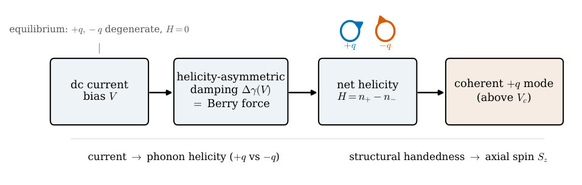
<figcaption class="paper-figure-caption"><b>Fig 1.</b> FIG. 1. Selection of a chiral-phonon helicity by a dc current. At equilibrium the +q and −q modes</figcaption>
</figure>
<figure class="paper-figure-card">

<figcaption class="paper-figure-caption"><b>Fig 2.</b> FIG. 2. Helical-wire model. (a) Electron-induced damping of the two helicities versus bias. They</figcaption>
</figure>
<figure class="paper-figure-card">
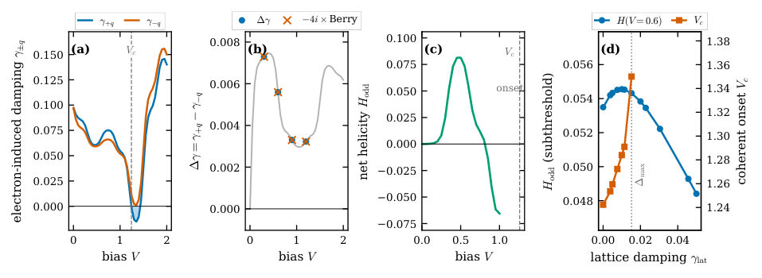
<figcaption class="paper-figure-caption"><b>Fig 3.</b> Fig. 2(b) are indistinguishable]. Both sides of Eq. (5) are two ways of evaluating the same</figcaption>
</figure>
<figure class="paper-figure-card">
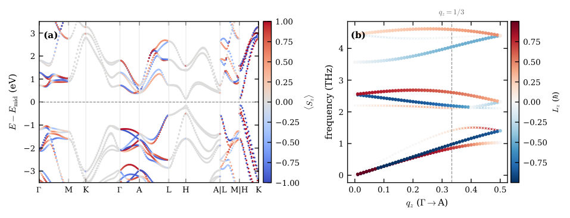
<figcaption class="paper-figure-caption"><b>Fig 4.</b> FIG. 3. Ab initio ingredients for elemental tellurium, no adjustable parameters. (a) QSG ˆW+SOC</figcaption>
</figure>
<figure class="paper-figure-card">
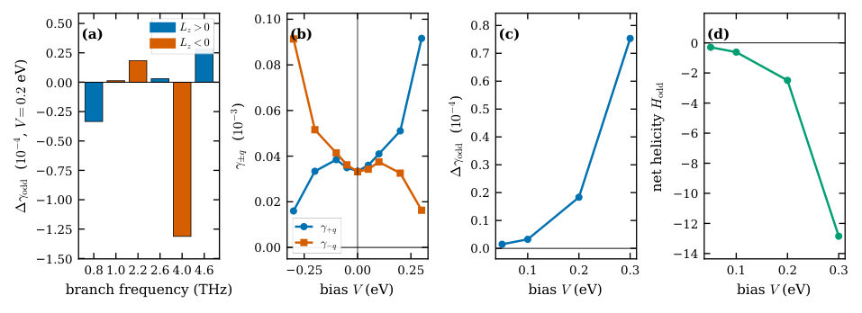
<figcaption class="paper-figure-caption"><b>Fig 5.</b> FIG. 4. Elemental tellurium from first-principles electronic structure and phonons, no adjustable</figcaption>
</figure>
</div>

<p><strong>Summary.</strong> This theoretical study demonstrates that applying a DC bias current to a chiral conductor selects the helicity of its phonons. This selection is driven by an asymmetry in electron-phonon damping, which manifests as a nonconservative Berry force. The effect is robust, leading to a measurable net lattice helicity, and is confirmed using advanced quantum transport calculations on tellurium.</p>
<p><strong>Why it may be interesting.</strong> This work provides a clear, non-equilibrium mechanism for generating macroscopic quantum coherence (phonon helicity) using only a bias current, connecting electronic transport to lattice dynamics in a chiral setting.</p>
<details>
<summary>Detailed structure</summary>
<p><strong>Main problem.</strong> The paper investigates how a DC electric current can induce and select a specific helicity for a chiral phonon in a chiral conductor, leading to a net lattice helicity.</p>
<p><strong>Main result.</strong> The current generates an asymmetry in phonon damping, which is mathematically equivalent to a nonconservative Berry force, leading to a net, non-zero phonon helicity at any finite bias.</p>
<p><strong>Method.</strong> The analysis uses non-equilibrium Green's functions (NEGF) and rate equation closures to model the phonon kinetics in an open quantum system driven by a bias voltage.</p>
<p><strong>Model / system.</strong> The model is a chiral conductor, studied theoretically using a helical tight-binding wire and validated quasi-ab initio calculations on elemental tellurium. The system includes electronic Hamiltonian, phonon bath, and electron-phonon coupling.</p>
<p><strong>Key observables.</strong> Phonon helicity asymmetry ($\Delta\gamma(V)$), net lattice helicity ($H$), and the transition to a self-sustained coherent travelling wave.</p>
<p><strong>Important parameters / regimes.</strong> Bias voltage ($V$), phonon wavevector ($q$), and the lattice damping rate ($\gamma_{lat}$).</p>
<p><strong>Assumptions / limitations.</strong> The phonon kinetics are closed using a rate equation, and the electronic self-energy is calculated using the Migdal approximation.</p>
<p><strong>Figures summary.</strong> Figures illustrate the transition from equilibrium (zero helicity) to bias-driven selection via damping asymmetry, and finally to a coherent travelling mode above a critical bias ($V_c$).</p>
<p><strong>Paper structure.</strong> The paper develops the theory by calculating the current-induced damping asymmetry ($\Delta\gamma$), deriving the resulting net helicity ($H$) via rate equations, and confirming the mechanism through both model calculations and quasi-ab initio simulations on tellurium.</p>
</details>
<details>
<summary>Abstract</summary>
<p>The emergence of spin-polarized electrons from nonmagnetic chiral molecules and crystals is called Chirality-induced spin selectivity (CISS). A chiral phonon of definite wavevector $q$ can strongly enhance it, but near equilibrium the two helicities $+q$ and $-q$ are equally populated: they are time-reversal partners and their contributions cancel. We show that in a biased chiral conductor the current causes the phonon of one helicity to damp less than the other. The damping asymmetry is odd in the current, odd under $q\rightarrow-q$, invariant under a mirror that reverses the structural handedness, and equal, mode for mode, to the current-induced nonconservative Berry force on the phonon coordinate. Closing the phonon kinetics with a rate equation turns the asymmetry into a net lattice helicity: at any finite bias one helicity is preferentially populated, with no threshold, growing linearly with the current as $V\rightarrow0$; above a threshold that helicity becomes a self-sustained coherent travelling wave. We demonstrate this effect in elemental tellurium, treated as an open quantum system (electronic Hamiltonian, phonon bath, and electron-phonon coupling) within a quasi-ab initio framework. The electronic Hamiltonian is supplied by a vertex-corrected quasiparticle self-consistent $GW$ (QSGW) potential with spin-orbit coupling; nuclear displacements are modeled with a machine-learned interatomic potential, which yields chiral phonon modes at finite $\pm q_z$ on the $Γ$-A line. The perturbation to the electronic Hamiltonian from a nuclear displacement is approximated by a frozen-phonon deformation potential. No optical pump is needed: a bias alone drives the current and selects the phonon helicity; reversing the current reverses the selection.</p>
</details>
<p><sub><a href="#top">↑ back to top</a></sub></p>

<p><a id="paper-2610.04584"></a></p>
<h3 id="micromagnet-engineering-for-enhanced-addressability-of-donor-cluster-arrays-in-silicon"><a href="http://arxiv.org/abs/2610.04584v1">Micromagnet engineering for enhanced addressability of donor-cluster arrays in silicon</a></h3>
<p><strong>Authors:</strong> Hao Wang, Baolong Zhao, Shihang Zhang, Ziliang Jin, Huan Shu, Peihao Huang, Guanyong Wang, Mingchao Duan, Tianluo Pan, Tao Xin, Guangchong Hu, Zhen Tian, Dapeng Yu, Yu He<br>
<strong>Type:</strong> both · <strong>Category:</strong> quantum information and computing · <strong>PDF:</strong> <a href="https://arxiv.org/pdf/2610.04584v1">https://arxiv.org/pdf/2610.04584v1</a><br>
<strong>Analysis basis:</strong> full PDF text, analyzed in chunks
<strong>Topic relevance:</strong> 🔥 <code>QC/QI experiment</code> <strong>4/5</strong> · <code>analog quantum simulation</code> <strong>1/5</strong> · <code>quantum measurements</code> <strong>1/5</strong></p>
<div class="figure-strip-hint">↔ Scroll figures horizontally</div>
<div class="paper-figures-scroll">
<figure class="paper-figure-card">
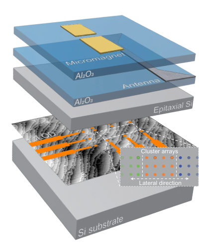
<figcaption class="paper-figure-caption"><b>Fig 1.</b> Fig. 1. Schematic illustration of the quantum processor architecture integrating micromagnets with phosphorus donor-cluster arrays</figcaption>
</figure>
<figure class="paper-figure-card">
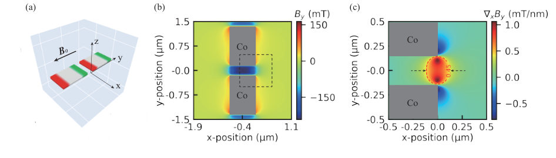
<figcaption class="paper-figure-caption"><b>Fig 2.</b> Fig. 2. Micromagnet geometry and magnetic field simulation. (a) Schematic illustration of the micromagnet, depicting the external</figcaption>
</figure>
<figure class="paper-figure-card">
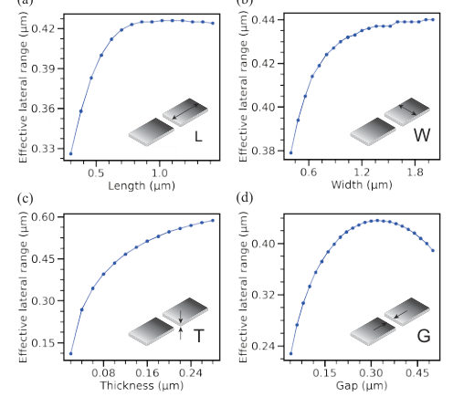
<figcaption class="paper-figure-caption"><b>Fig 3.</b> Fig. 3. Geometric optimization of micromagnets. The lateral range of the region with an effective magnetic field gradient of ≥</figcaption>
</figure>
</div>

<p><strong>Summary.</strong> This paper presents a scalable quantum processor architecture for silicon spin qubits by integrating on-chip micromagnets with STM-defined phosphorus donor-cluster arrays. The magnets generate controlled magnetic field gradients, solving the frequency crowding issue that limits qubit addressability. This breakthrough enables the potential integration and addressing of over 120 atomic spin qubits using a single microwave antenna.</p>
<p><strong>Why it may be interesting.</strong> This work directly addresses the physical implementation challenges of scaling solid-state quantum memories, providing a concrete engineering solution for qubit addressing beyond intrinsic material limitations.</p>
<details>
<summary>Detailed structure</summary>
<p><strong>Main problem.</strong> The primary bottleneck for scaling silicon quantum computing using phosphorus donor-cluster arrays is achieving independent addressability for individual spin qubits due to frequency crowding.</p>
<p><strong>Main result.</strong> Integrating on-chip micromagnets generates magnetic field gradients that overcome the limitations of hyperfine interaction randomness, enabling the addressability of over 120 atomic spin qubits with a single microwave antenna.</p>
<p><strong>Method.</strong> The authors combine micromagnetic simulations (using Co magnets) with experimental magnetic field measurements (using SNVM/ODMR) to validate a novel quantum processor architecture.</p>
<p><strong>Model / system.</strong> The platform uses phosphorus donors in silicon patterned by STM-HDL, forming donor-cluster arrays. The system is enhanced by integrating micromagnets to generate controlled magnetic field gradients ($
abla B$) that shift qubit resonant frequencies.</p>
<p><strong>Key observables.</strong> Resonant frequencies ($f_{	ext{ESR}}$, $f_{	ext{NMR}}$), magnetic field gradients ($
abla B$), and the lateral range over which a required gradient ($\approx 0.45  ext{ mT/nm}$) is maintained.</p>
<p><strong>Important parameters / regimes.</strong> The design aims for scalability to over 120 qubits; the required gradient strength is critical for frequency multiplexing.</p>
<p><strong>Assumptions / limitations.</strong> The initial analysis assumes the ideal single-domain behavior of the micromagnets, though discrepancies suggest multi-domain formation and polycrystalline structure are present.</p>
<p><strong>Figures summary.</strong> Figures illustrate the quantum processor architecture integrating magnets and donor arrays, showing simulated and measured magnetic field components ($B_x, B_y, B_z$) validating the magnet design.</p>
<p><strong>Paper structure.</strong> The paper first establishes the addressability bottleneck using hyperfine randomness, proposes the micromagnet solution, validates the magnet geometry via micromagnetic simulations, and finally confirms the design feasibility through direct magnetic field measurements.</p>
</details>
<details>
<summary>Abstract</summary>
<p>Phosphorus donors in silicon are one of the promising platforms for fault-tolerant quantum computing, owing to their long coherence times and compatibility with complementary metal-oxide-semiconductor (CMOS) technology. However, a key bottleneck for scaling this platform lies in the independent addressability of individual spin qubits. Here, we present a scalable quantum processor architecture that integrates scanning tunneling microscope (STM)-defined phosphorus donor-cluster arrays with on-chip micromagnets. By generating magnetic field gradients, the micromagnets enable a broader addressable frequency range compared to the addressing scheme based solely on variations in hyperfine (HF) interactions, which arise from the randomness of intra-cluster configurations. Through micromagnetic simulations to optimize micromagnet geometry, we demonstrate that these structures are compatible with customized array designs, facilitating the integration of over 120 atomic spin qubits and enabling frequency multiplexing with a single microwave antenna, which greatly reduces the overhead of fan-out addressing lines. This design is further validated via magnetic measurements, which generally align with our micromagnetic simulations. These results establish a critical foundation for the development of scalable silicon quantum computing with atomic qubits.</p>
</details>
<p><sub><a href="#top">↑ back to top</a></sub></p>

<p><a id="paper-2610.04111"></a></p>
<h3 id="exchange-controlled-quantum-beats-and-entanglement-in-an-exciton-bimodal-cavity-system"><a href="http://arxiv.org/abs/2610.04111v1">Exchange-controlled quantum beats and entanglement in an exciton--bimodal-cavity system</a></h3>
<p><strong>Authors:</strong> Cesar E. P. Villegas, Victor P. Brasil, Pedro A. S. Contri, Kevin Lizárraga, Jonas Maziero<br>
<strong>Type:</strong> theory · <strong>Category:</strong> other · <strong>PDF:</strong> <a href="https://arxiv.org/pdf/2610.04111v1">https://arxiv.org/pdf/2610.04111v1</a><br>
<strong>Analysis basis:</strong> full PDF text, analyzed in chunks
<strong>Topic relevance:</strong> <code>Tavis-Cummings &amp; cavity-many-emitter</code> <strong>3/5</strong> · <code>analog quantum simulation</code> <strong>3/5</strong> · <code>methods for driven-dissipative</code> <strong>3/5</strong> · <code>correlated / nonlocal dissipation</code> <strong>2/5</strong> · <code>driven-dissipative phase transition</code> <strong>2/5</strong> · <code>Keldysh / 2PI / non-Gaussian methods</code> <strong>1/5</strong> · <code>interference shaping light</code> <strong>1/5</strong> · <code>non-equilibrium universality</code> <strong>1/5</strong> · <code>quantum measurements</code> <strong>1/5</strong></p>
<div class="figure-strip-hint">↔ Scroll figures horizontally</div>
<div class="paper-figures-scroll">
<figure class="paper-figure-card">
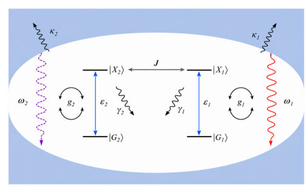
<figcaption class="paper-figure-caption"><b>Fig 1.</b> FIG. 1. Schematic representation of a two-exciton system coupled to a bimodal optical cavity, indicating the exciton (ε1,2), and cavity frequencies (ω1,2), the exciton–cavity cou- plings (g1,2), as well as the exciton (γ1,2) and photon (κ1,2) decay rates.</figcaption>
</figure>
<figure class="paper-figure-card">
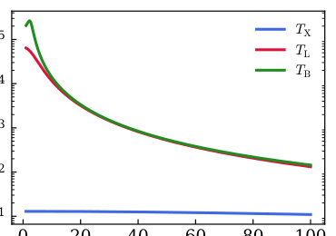
<figcaption class="paper-figure-caption"><b>Fig 2.</b> FIG. 2. (a) Calculated optical absorbance of bilayer 6-AGNR showing the main excitonic states with energies ε1 and ε2. The inset shows an schematic representation of a AGNR solid- state platform embedded in a bimodal cavity. (b) Oscilla- tion period for local polaritonic (red line), long-period dressed state beats (green line) and excitonic regime (blue line) as a function of the exciton exchange interaction J.</figcaption>
</figure>
<figure class="paper-figure-card">
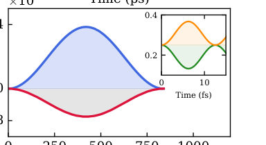
<figcaption class="paper-figure-caption"><b>Fig 3.</b> FIG. 3. Numerical and analytic population dynamics consid- ering three different energy regimes for the exciton exchange. (a) an initial state |X2⟩for large J = 0.21eV. (b) an initial state (|C1⟩+ |X2⟩)/ √</figcaption>
</figure>
<figure class="paper-figure-card">
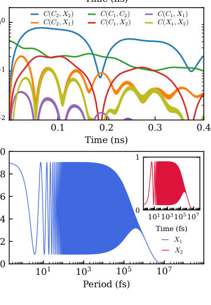
<figcaption class="paper-figure-caption"><b>Fig 4.</b> FIG. 4. (a) Dynanics of photon and exciton populations for the weak J regime corresponding to an initial state (|C1⟩+ 5|C2⟩)/ √</figcaption>
</figure>
<figure class="paper-figure-card">
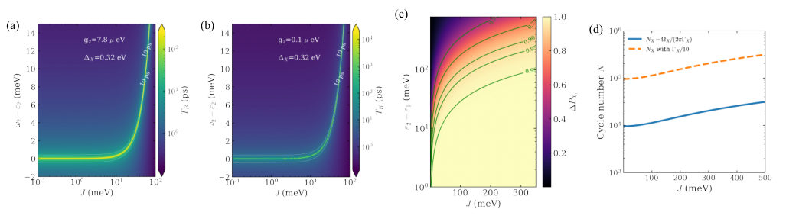
<figcaption class="paper-figure-caption"><b>Fig 5.</b> FIG. 5. Engineering maps for the characteristic time scales and transfer efficiency of the two-exciton–bimodal-cavity system. (a,b) Long beat period TB as a function of the exciton exchange interaction J and the external cavity detuning ω2 −ε2 for two values of the external exciton–cavity coupling: (a) g2 = 7.8 µeV and (b) g2 = 0.1 µeV. (c) Maximum excitonic population swing, ∆PX1 = P max X1 −P min X1 , as a function of J and the excitonic detuning ∆X = ε2 −ε1, assuming an optimized initial state. (d) Excitonic coherent-cycle number N = T2/TX as a function of J under resonant exciton–cavity conditions. The solid curve corresponds to the estimated coherence rate, while the dashed curve...</figcaption>
</figure>
</div>

<p><strong>Summary.</strong> This theoretical study explores controlling quantum dynamics and entanglement in an exciton-bimodal-cavity system by leveraging an exciton-exciton exchange interaction. By deriving effective Hamiltonians for different energy regimes, the authors show how to engineer long-lived quantum correlations and achieve near-complete population transfer. The results provide direct design rules for realizing coherent excitonic operations in nanoscale platforms.</p>
<p><strong>Why it may be interesting.</strong> This work is highly relevant to AMO physics and quantum optics as it deals with cavity QED, engineered quantum dynamics, and the control of entanglement in solid-state excitonic systems.</p>
<details>
<summary>Detailed structure</summary>
<p><strong>Main problem.</strong> The paper aims to demonstrate tunable population transfer and entanglement generation in a two-exciton system coupled to a bimodal optical cavity, incorporating an exciton-exciton exchange interaction.</p>
<p><strong>Main result.</strong> The study establishes a controllable route for engineering long-lived entanglement and coherent excitonic operations by controlling the exchange interaction, cavity detuning, and light-matter coupling.</p>
<p><strong>Method.</strong> The authors use dressed-state transformations and Löwdin partitioning to derive effective Hamiltonians, solving the dynamics via the Lindblad master equation.</p>
<p><strong>Model / system.</strong> The system is a two-exciton system coupled to a bimodal optical cavity, modeled using a full Hamiltonian that includes exciton energies, cavity frequencies, coupling strengths, and an exchange interaction term. The analysis is applied to graphene nanoribbon excitons.</p>
<p><strong>Key observables.</strong> Population transfer, entanglement concurrence, beat period, and excitonic coherent-cycle number.</p>
<p><strong>Important parameters / regimes.</strong> Exchange interaction strength (J), cavity detuning, and light-matter coupling strength (g). The dynamics are analyzed in small/moderate and large-exchange regimes.</p>
<p><strong>Assumptions / limitations.</strong> The analysis assumes the use of the rotating-wave approximation and often focuses on the single-excitation subspace or specific energy regimes for simplification.</p>
<p><strong>Figures summary.</strong> Figures illustrate the system schematic, show population and entanglement dynamics for varying exchange interactions (small vs. large J), and present engineering maps relating beat period, transfer amplitude, and coherent cycles to control parameters.</p>
<p><strong>Paper structure.</strong> The paper progresses by defining the full Hamiltonian and dynamics, then systematically decomposing the problem into effective Hamiltonians for different physical regimes (excitonic, local polaritonic, beat-polaritonic) using advanced mathematical techniques before deriving control rules.</p>
</details>
<details>
<summary>Abstract</summary>
<p>We theoretically demonstrate tunable population transfer and entanglement generation in a two-exciton system coupled to a bimodal optical cavity, including an exciton-exciton exchange interaction. By using dressed-state transformations and Löwdin partitioning, we derive effective Hamiltonians that identify three dynamical time scales: local polaritonic oscillations, long-period dressed-state beats, and direct excitonic exchange. We apply the framework to graphene nanoribbon excitons, using excitonic energies, transition dipoles, and lifetimes obtained from first-principles calculations to parameterize the model. In the small- and moderate-exchange regimes, the dynamics become multiscale, and the beat channel sustains sizable quantum entanglement over long dissipative time windows. In the large-exchange regime, the excitonic Hamiltonian dominates and drives nearly complete population transfer between excitonic states over many coherent cycles. The resulting analytical expressions provide direct design rules connecting the beat period, transfer amplitude, and coherent-cycle number to the exchange interaction, cavity detuning, and light--matter coupling. Our results establish a controllable route for engineering long-lived entanglement and coherent excitonic operations in exciton--bimodal-cavity systems.</p>
</details>
<p><sub><a href="#top">↑ back to top</a></sub></p>

<p><a id="paper-2610.05536"></a></p>
<h3 id="field-free-dual-superconducting-diode-via-photon-assisted-interference"><a href="http://arxiv.org/abs/2610.05536v1">Field-free dual superconducting diode via photon-assisted interference</a></h3>
<p><strong>Authors:</strong> Laura Borgongino, Rubén Seoane Souto, José Luis del Olmo, Ramón Aguado, Alessandro Crippa, Francesco Giazotto, Elia Strambini<br>
<strong>Type:</strong> both · <strong>Category:</strong> other · <strong>PDF:</strong> <a href="https://arxiv.org/pdf/2610.05536v1">https://arxiv.org/pdf/2610.05536v1</a><br>
<strong>Analysis basis:</strong> full PDF text, analyzed in chunks
<strong>Topic relevance:</strong> <code>Keldysh / 2PI / non-Gaussian methods</code> <strong>3/5</strong> · <code>driven-dissipative phase transition</code> <strong>3/5</strong> · <code>interference shaping light</code> <strong>3/5</strong> · <code>methods for driven-dissipative</code> <strong>3/5</strong> · <code>non-equilibrium universality</code> <strong>2/5</strong> · <code>correlated / nonlocal dissipation</code> <strong>1/5</strong> · <code>quantum measurements</code> <strong>1/5</strong></p>
<div class="figure-strip-hint">↔ Scroll figures horizontally</div>
<div class="paper-figures-scroll">
<figure class="paper-figure-card">
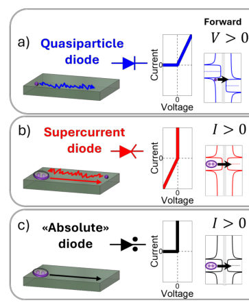
<figcaption class="paper-figure-caption"><b>Fig 1.</b> Fig. 1 Operational concepts of superconducting diodes, the absolute diode paradigm, and device implementation. a, Quasiparticle diode. Conceptual sketch of quasiparticle trans- port, circuit symbol, and I–V curve under voltage bias. Forward conduction occurs (RFWD &gt; 0) alongside suppressed reverse conduction (RREV →∞), analogously to a semiconductor p–n junction. b, Supercurrent diode. Conceptual sketch of Cooper-pair (forward) and quasiparticle (backward) transport mechanisms, circuit symbol, and current-biased I–V characteristic. Dissipationless trans- port (RFWD = 0) converts to dissipative conduction (RREV &gt; 0) under reverse bias. c, Absolute diode. Conceptual sketch of combined carrier...</figcaption>
</figure>
<figure class="paper-figure-card">
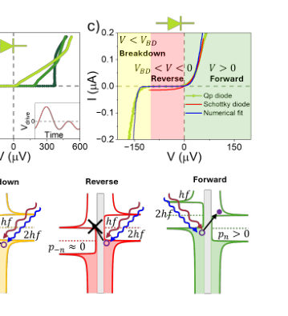
<figcaption class="paper-figure-caption"><b>Fig 2.</b> Fig. 2 Biharmonic drive-induced quasiparticle diode. a, b, I–V characteristics under bihar- monic driving (f = 1.405 GHz and 2f = 2.810 GHz) at various drive amplitudes Vac for relative phases θ = π/2 (a) and θ = −π/2 (b). Insets: time-domain waveforms of the biharmonic drive Vdrive(t). c, Ideal quasiparticle diode trace (θ = −π/2, green) compared with a semiconductor Schottky diode fit (red, n = 3.1, IS = 14.2 nA) and extended Tien-Gordon model (blue). d, Quasiparticle diode efficiency ηQP (green), compared with the theoretical semiconductor p–n diode efficiency ηp-n (red), and the Tien-Gordon model (blue). Inset: Extended voltage range showing reverse breakdown. e, Energy-diagram...</figcaption>
</figure>
<figure class="paper-figure-card">
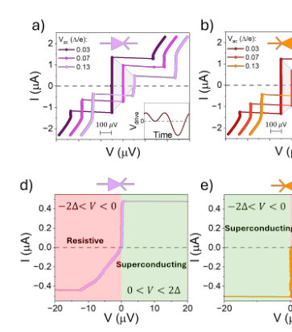
<figcaption class="paper-figure-caption"><b>Fig 3.</b> Fig. 3 Drive-induced supercurrent diode and polarity inversion. a, b, I–V characteristics recorded under biharmonic microwave driving (f = 1.405 GHz, 2f = 2.810 GHz) at increasing ampli- tude Vac for relative phases θ = π/2 (a) and θ = −π/2 (b). c, Supercurrent diode efficiency ηS versus relative phase θ at Vac ≈0.12 ∆/e, displaying sinusoidal control and polarity reversal. d, e, High-resolution I–V traces in the ideal diode regime (ηS ≈1) for θ = π/2 (d) and θ = −π/2 (e), showing a finite-slope dissipative branch (R ≈0.15 RN) prior to switching into the subgap quasipar- ticle state. f, Simulated I–V characteristics obtained from the modified RSJ model for ω = 0.001, V1 = 2V2 = RSIc/3, θ =...</figcaption>
</figure>
<figure class="paper-figure-card">
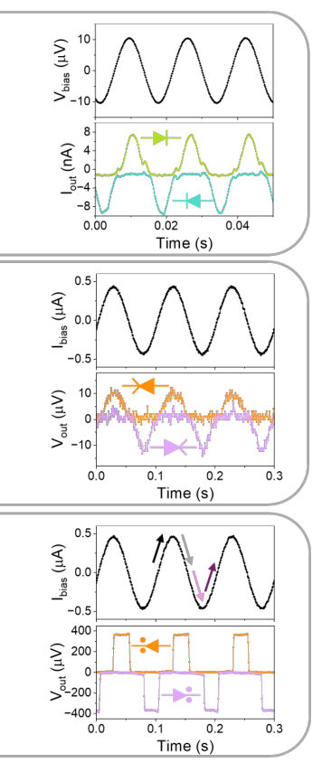
<figcaption class="paper-figure-caption"><b>Fig 4.</b> Fig. 4 Low-frequency AC rectification across operating regimes. a, Half-wave current rectifi- cation in the quasiparticle diode of an AC voltage bias (fbias = 61 Hz) for relative phases θ = ±π/2. b, Half-wave voltage rectification in the supercurrent diode regime of an AC current bias (fbias = 10 Hz) for θ = ±π/2. c, Left: Static I–V characteristic (θ = π/2) highlighting the pronounced hysteresis between switching (Isw ≈450 nA) and retrapping (Ir ≈50 nA) currents. Arrows denote the bias sweep direction. Right: Square-wave voltage rectification recorded under an AC current bias (fbias = 10 Hz), clipped strictly at V ≈2∆/e. All measurements were performed at T ≈100 mK under biharmonic driving...</figcaption>
</figure>
<figure class="paper-figure-card">
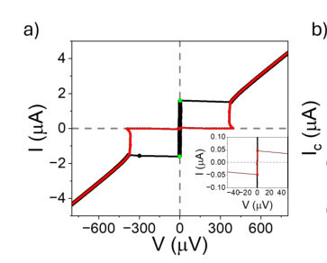
<figcaption class="paper-figure-caption"><b>Fig 5.</b> Fig. 5 Full I–V curve in Josephson regime and Fraunhofer interference pattern. a, Extended I–V curves including switching (black dots) and retrapping (red dots) branches measured at zero magnetic field. Green markers highlight equal switching currents I+ sw = |I− sw|. Inset: Close-up of the retrapping current showing |I± r | ≈50, nA. b, Fraunhofer interference pattern of the switching current Isw as a function of the in-plane magnetic field B. Red and blue markers highlight the mag- netic fields corresponding to the maximum (Bmax = 0 mT) and minimum (Bmin = 17 mT) of the interference pattern, respectively. Data acquired at T ≈80 mK.</figcaption>
</figure>
</div>

<p><strong>Summary.</strong> This work presents a novel superconducting diode that operates without external magnetic fields by using biharmonic microwave driving. By controlling the relative phase of the drive, the device can dynamically switch between operating as a Cooper-pair diode or a quasiparticle diode. This approach yields high-efficiency, tunable rectification suitable for next-generation low-power cryogenic electronics.</p>
<p><strong>Why it may be interesting.</strong> The use of microwave driving to engineer quantum interference effects in a superconducting junction to achieve directional transport is highly relevant to open quantum systems and quantum electronics.</p>
<details>
<summary>Detailed structure</summary>
<p><strong>Main problem.</strong> The primary challenge is achieving reliable, non-reciprocal (diode-like) electronic transport at sub-Kelvin temperatures, overcoming the limitations of conventional semiconductor diodes in cryogenic regimes.</p>
<p><strong>Main result.</strong> The authors demonstrate a field-free, dynamically reconfigurable superconducting diode using a single junction driven by biharmonic microwave excitation, achieving rectification efficiencies surpassing existing devices.</p>
<p><strong>Method.</strong> The study combines theoretical derivations based on multi-photon tunneling (Fermi's golden rule) with semiclassical modeling (RSJ model) to predict and interpret experimental measurements.</p>
<p><strong>Model / system.</strong> The system is a conventional Al/AlOx/Al superconducting tunnel junction (SIS junction). Operation is controlled by applying a biharmonic microwave drive, which allows independent control over both dissipationless Cooper-pair and dissipative quasiparticle tunneling channels.</p>
<p><strong>Key observables.</strong> Diode efficiency ($\eta_{QP}, \eta_S$), I-V characteristics under varying drive phases ($ heta$), and the identification of zero forward resistance and strongly suppressed reverse conduction.</p>
<p><strong>Important parameters / regimes.</strong> The relative phase ($   heta$) of the microwave drive, the superconducting gap energy ($\Delta$), and the ratio of drive amplitudes ($k=V_2/V_1$).</p>
<p><strong>Assumptions / limitations.</strong> The analysis assumes the applicability of the Tien-Gordon model extension and relies on the ability to isolate and control the distinct Cooper-pair and quasiparticle tunneling mechanisms.</p>
<p><strong>Figures summary.</strong> Figures illustrate the operational concepts (Quasiparticle, Supercurrent, Absolute diode), show I-V curves comparing theoretical models to experimental measurements, and detail AC rectification measurements in both regimes.</p>
<p><strong>Paper structure.</strong> The paper progresses from establishing the need for cryogenic diodes to developing the theoretical framework using biharmonic driving to break symmetry, calculating the resulting transport channels (QP and Cooper-pair), and finally demonstrating the tunable 'absolute diode' behavior.</p>
</details>
<details>
<summary>Abstract</summary>
<p>Non-reciprocal transport underpins key functionalities in signal processing and logic; however, conventional semiconductor diodes exhibit reduced performance at sub-Kelvin temperatures. As cryogenic electronics continue to scale, there is increasing demand for diode operation compatible with low-temperature and low-dissipation conditions. This need has driven the development of alternatives to p-n junctions that rely on non-reciprocal electron transport mechanisms efficient in the deep-cryogenic regime. Superconducting devices constitute a natural low-loss platform, yet most existing superconducting diodes are restricted to either Cooper-pair or quasiparticle transport, often requiring complex material stacks, asymmetric geometries, or external magnetic fields. No single, geometrically symmetric junction has yet integrated rectification across both transport channels to achieve vanishing resistance under forward bias and strongly suppressed conduction under reverse bias. Here, we demonstrate a dynamically reconfigurable dual-function superconducting diode based on a conventional Al/AlOx/Al tunnel junction. Via microwave biharmonic driving, we exploit multi-tone photon-assisted tunneling to independently control dissipationless and dissipative transport channels within the same device. Varying the microwave drive amplitude induces a transition from a supercurrent diode to an ideal quasiparticle diode, achieving rectification efficiencies exceeding those of conventional Schottky diodes and contemporary superconducting diodes. We further demonstrate AC signal rectification under both current-bias and voltage-bias configurations. Finally, we implement a proof-of-concept "absolute diode" that combines zero forward resistance with strongly suppressed reverse conduction. This tunable approach provides a versatile building block for low-power cryogenic electronic architectures.</p>
</details>
<p><sub><a href="#top">↑ back to top</a></sub></p>

<p><a id="paper-2610.03891"></a></p>
<h3 id="integrating-spin-glass-dynamics-into-nanomechanical-resonators"><a href="http://arxiv.org/abs/2610.03891v1">Integrating spin glass dynamics into nanomechanical resonators</a></h3>
<p><strong>Authors:</strong> S. Y. Grebenchuk, T. M. Savilov, Y. W. Ho, A. K. Grebenko, M. Kravtsov, J. M. Wolf, D. A. Litvinov, Z. Yang, P. Cai, S. Ramachandran, R. Duan, L. Zheng, B. Özyilmaz, G. Eda, E. J. G. Santos, M. Koperski, K. S. Novoselov, M. Šiškins<br>
<strong>Type:</strong> both · <strong>Category:</strong> disordered systems and neural networks · <strong>PDF:</strong> <a href="https://arxiv.org/pdf/2610.03891v1">https://arxiv.org/pdf/2610.03891v1</a><br>
<strong>Analysis basis:</strong> full PDF text, analyzed in chunks
<strong>Topic relevance:</strong> <code>analog quantum simulation</code> <strong>3/5</strong> · <code>quantum measurements</code> <strong>2/5</strong> · <code>scars &amp; prethermalization</code> <strong>2/5</strong> · <code>correlated / nonlocal dissipation</code> <strong>1/5</strong> · <code>driven-dissipative phase transition</code> <strong>1/5</strong> · <code>methods for driven-dissipative</code> <strong>1/5</strong> · <code>non-equilibrium universality</code> <strong>1/5</strong></p>
<div class="figure-strip-hint">↔ Scroll figures horizontally</div>
<div class="paper-figures-scroll">
<figure class="paper-figure-card">

<figcaption class="paper-figure-caption"><b>Fig 1.</b> FIG. 1. Spin glass state in NFT. a - Crystal structure of orthorhombic phase of NFT. b - Vibrating sample magnetometry (VSM) measurements of the temperature dependence of magnetization M(T) for ZFC and FC cases for a bulk crystal, measured with an applied field of 100 Oe. c - Temperature dependence of real part χ′ of AC magnetic susceptibility χ = χ′+iχ′′, measured at different frequencies of the AC component of out-of-plane magnetic field. d - Fitting of scaling power law extracted from the glass temperature transition dependency on the frequency of the AC field. e - Atomistic simulation image of a spin configuration after 50 ps relaxation time, featuring formation of spin cluster domains...</figcaption>
</figure>
<figure class="paper-figure-card">

<figcaption class="paper-figure-caption"><b>Fig 2.</b> FIG. 2. Time dynamics of micromagnetic structure of a spin glass state. a-h - Time dependence of the magnetic signal of 110 nm thick NFT flake captured with MFM at 1.7 K and lift height of 30 nm after changing external out-of-plane magnetic field from 0 to 250 mT. Prior to changing the field, the sample stayed in zero field for several hours. i - Phase range (blue curve) and complexity (red curve) time dependencies of MFM images (a-h). j - Schematic figure of the spatial distribution of the states at different local minima of the free energy landscape across the sample. k - Examples of phase range time dependence of different regions of the sample shown in the inset figure. l - Examples of...</figcaption>
</figure>
<figure class="paper-figure-card">

<figcaption class="paper-figure-caption"><b>Fig 3.</b> FIG. 3. Magnetic field dependence of micromagnetic structure of a spin glass state in NFT. a-d - Magnetic field dependence of MFM images for 110 nm thick NFT sample measured at 1.7 K at a lift height of 30 nm. The second row: a corresponding FFT images of MFM scans. e - Complexity dependence on the external magnetic field extracted from MFM images. f - Optical image of 12.2 and 13 nm thick NFT sample. g-k - Magnetic field dependence of MFM images for the same flake measured at the spot denoted with a white rectangle on panel (f). The arrow points out the border between 15L and 16L. MFM was done in an out-of-plane magnetic field at T = 1.7 K and lift height of 30 nm.</figcaption>
</figure>
<figure class="paper-figure-card">

<figcaption class="paper-figure-caption"><b>Fig 4.</b> FIG. 4. Nanomechanical properties of NFT membranes. a - Schematic of the laser interferometry setup. Detection laser: λred = 633 nm; actuation laser: λblue = 450 nm. VNA — vector network analyzer; CM — cold mirror; PBS — polarizing beam splitter; PD — photodiode. b - Optical image of an NFT membrane suspended over 285 nm-deep circular holes in silicon oxide. The membrane radius is 4 µm and a thickness of ∼20 nm. The measured membrane is marked by a red dashed circle. c - Amplitude of the fundamental membrane resonance at 2 K for the sample shown in b (blue dots), with the fit to the damped linear harmonic oscillator model (red line, fres = 36165.6 ± 0.9kHz, Q = 1980 ± 190). d - Resonance...</figcaption>
</figure>
<figure class="paper-figure-card">

<figcaption class="paper-figure-caption"><b>Fig 5.</b> FIG. 5. Spin glass properties in nanomechanical response of NFT membrane. a-b - Resonance frequency and quality factor during temperature-induced relaxation. c-d - Resonance frequency and quality factor during magnetic field-induced relaxation. e - Resonance frequency, magnetic field, and temperature over time for the measurements shown in f. f - Resonance frequency for a magnetic field sweep at 1.7 K. Small arrows indicate regions of a distinct change of trend.</figcaption>
</figure>
</div>

<p><strong>Summary.</strong> This work demonstrates a novel method to read out the complex, slow dynamics of spin-glass magnets by integrating them into nanomechanical resonators. By measuring the resulting strain changes in the resonator's frequency, the authors establish a functional platform for studying frustrated magnetism in nanoscale devices.</p>
<p><strong>Why it may be interesting.</strong> The coupling of slow, non-equilibrium magnetic dynamics (spin glasses) to a mechanical oscillator provides a unique, highly sensitive platform for studying energy dissipation and relaxation processes in complex magnetic systems, bridging magnetism and mechanics.</p>
<details>
<summary>Detailed structure</summary>
<p><strong>Main problem.</strong> The primary challenge is harnessing the slow, history-dependent dynamics of spin glasses for practical use in functional electronic or mechanical devices.</p>
<p><strong>Main result.</strong> The authors successfully demonstrated a functional readout by transducing the slow magnetic domain relaxation of a spin-glass magnet into a measurable, time-dependent strain shift in a nanomechanical resonator.</p>
<p><strong>Method.</strong> The study combines advanced characterization techniques (VSM, MFM, MCD) with a novel integration platform: coupling the magnetic material to suspended NEMS resonators to measure mechanical frequency shifts.</p>
<p><strong>Model / system.</strong> The system utilizes thin films of $ ext{NbFeTe}_2$, which exhibit spin-glass behavior due to frustrated magnetism. This magnetic functionality is integrated into nanoelectromechanical systems (NEMS) membranes.</p>
<p><strong>Key observables.</strong> Slow, hour-scale magnetic relaxation, characteristic splitting of ZFC/FC curves, and time/field-dependent shifts in the mechanical resonance frequency ($f_0$).</p>
<p><strong>Important parameters / regimes.</strong> Low temperatures (cryogenic), thin film thickness (nanometers), and the magnetic field history ($H(t)$).</p>
<p><strong>Assumptions / limitations.</strong> The mechanical response (strain) is assumed to be highly sensitive to the internal strain fields generated by the collective, slow reconfigurations of magnetic domain clusters.</p>
<p><strong>Figures summary.</strong> Figures illustrate the spin glass state via VSM curves and frequency dependence, show time evolution of magnetic domains via MFM, and demonstrate the coupling by plotting the resonance frequency shift as a function of magnetic field and time.</p>
<p><strong>Paper structure.</strong> The paper progresses from establishing the intrinsic spin-glass nature of the material using multiple magnetic probes (VSM, MFM, MCD) to the core demonstration: coupling this slow magnetic relaxation into a measurable mechanical signal using NEMS.</p>
</details>
<details>
<summary>Abstract</summary>
<p>Spin glasses are non-equilibrium magnetic systems with pronounced slow relaxation, ageing, and chaotic, synaptic-like properties, whose unique history-dependent dynamics have remained difficult to harness in functional devices. Two-dimensional van der Waals spin-glass magnets offer a route to overcome this limitation by allowing controlled coupling between magnetic and mechanical degrees of freedom. Here, we demonstrate the integration of a spin-glass functionality in nanoelectromechanical systems (NEMS) using thin exfoliated NbFeTe$_2$ films, which establishes a robust spin-glass state down to a few tens of nanometer-thick layers. Using cryogenic magnetic force microscopy, we reveal characteristic slow, hour-scale macroscopic magnetic relaxation, associated with glassy reorganisation of its magnetic domain clusters. Incorporation of thin NbFeTe$_2$ into membrane resonators allows the transduction of this glassy magnetic domain relaxation into strain, shifting their mechanical resonance frequency. This provides a functional nanomechanical readout of spin-glass dynamics and establishes a versatile platform for integrating frustrated magnetism into NEMS.</p>
</details>
<p><sub><a href="#top">↑ back to top</a></sub></p>

<p><a id="paper-2610.04481"></a></p>
<h3 id="a-vortex-avalanche-model-for-pulsar-glitches"><a href="http://arxiv.org/abs/2610.04481v1">A Vortex Avalanche Model for Pulsar Glitches</a></h3>
<p><strong>Authors:</strong> M. Ali Alpar, Erbil Gügercinoğlu<br>
<strong>Type:</strong> theory · <strong>Category:</strong> other · <strong>PDF:</strong> <a href="https://arxiv.org/pdf/2610.04481v1">https://arxiv.org/pdf/2610.04481v1</a><br>
<strong>Analysis basis:</strong> full PDF text, analyzed in chunks
<strong>Topic relevance:</strong> <code>Frenkel-Kontorova</code> <strong>3/5</strong> · <code>analog quantum simulation</code> <strong>2/5</strong> · <code>correlated / nonlocal dissipation</code> <strong>1/5</strong> · <code>driven-dissipative phase transition</code> <strong>1/5</strong> · <code>methods for driven-dissipative</code> <strong>1/5</strong> · <code>non-equilibrium universality</code> <strong>1/5</strong> · <code>scars &amp; prethermalization</code> <strong>1/5</strong></p>
<div class="figure-strip-hint">↔ Scroll figures horizontally</div>
<div class="paper-figures-scroll">
<figure class="paper-figure-card">

<figcaption class="paper-figure-caption"><b>Fig 1.</b> Figure 1. Schematic description of the crust superfluid with a partially devel- oped landscape of vortex traps. The model is axially symmetric with respect to the star’s rotation axis. The crust superfluid, a ring of circumference 2𝜋𝑅 and width 𝛿𝑅in planes perpendicular to the rotation axis, is depicted as a strip of length 2𝜋𝑅and width 𝛿𝑅. Rectangular geometry is chosen for sim- plicity. Each vortex trap, a square of side 𝐷, at the centre of a square &quot;tile&quot; of side 𝐷′ &gt; 𝐷, is surrounded by vortex-free space. Dots represent the pinned vortices, engaged in vortex creep. Two examples of extended vortex pinning regions are shown. Region 𝐴is disjoint in the azimuthal direction. Region 𝐵 is...</figcaption>
</figure>
</div>

<p><strong>Summary.</strong> This paper introduces a Vortex Avalanche Model to explain pulsar glitches, treating the neutron star superfluid as a lattice of pinned vortex traps. The model simulates the sudden release of angular momentum when these vortices unpin rapidly, successfully explaining key observational features like the bimodal distribution of glitch sizes. It emphasizes that the geometry of the pinning landscape is crucial for the avalanche dynamics.</p>
<p><strong>Why it may be interesting.</strong> While focused on astrophysics, the underlying physics—collective dynamics in a highly constrained, disordered, and inhomogeneous medium (pinned vortices)—shares conceptual links with models of glassy dynamics or charge transport in disordered solids.</p>
<details>
<summary>Detailed structure</summary>
<p><strong>Main problem.</strong> The paper models pulsar glitches, sudden spin-up events in pulsars, by proposing a mechanism involving the rapid unpinning and transport of quantized vortices within the neutron star's superfluid.</p>
<p><strong>Main result.</strong> The proposed vortex avalanche model qualitatively explains observed glitch parameters, including the bi-modality in the distribution of glitch magnitudes, by requiring the breaking of spatial scale-invariance.</p>
<p><strong>Method.</strong> The authors developed a two-dimensional model treating the vortex pinning landscape as a tiling of 'traps' and 'vortex-free regions' to simulate the avalanche dynamics.</p>
<p><strong>Model / system.</strong> The physical system is the superfluid component of a neutron star, where quantized vortices interact with the solid crust. The model treats the pinning landscape as a periodic structure of traps and pathways, governing vortex motion via mutual friction and pinning forces.</p>
<p><strong>Key observables.</strong> Pulsar glitch parameters ($\Delta\Omega/\Omega$), the distribution of glitch magnitudes (observed to be bimodal), and the evolution of glitch size with pulsar age.</p>
<p><strong>Important parameters / regimes.</strong> Critical strain angle of the crust solid, critical velocity for vortex unpinning ($v_{cr}$), trap size ($D$), and tile size ($D'$).</p>
<p><strong>Assumptions / limitations.</strong> The model assumes that the glitch is caused by a vortex avalanche propagating through pathways connecting localized vortex traps, and that the physics is governed by the geometry of the pinning landscape.</p>
<p><strong>Figures summary.</strong> Figure 1 schematically illustrates the crust superfluid as a strip tiled by vortex traps (squares of side D) within larger domains (D'), visualizing the geometry of the model.</p>
<p><strong>Paper structure.</strong> The paper builds from the general problem of pulsar glitches to proposing a 2D model of the superfluid. It details the physics of vortex motion (creep, pinning forces), develops the avalanche mechanism based on trap geometry, and finally relates the resulting glitch size to observable parameters like the moment of inertia ratio ($eta$).</p>
</details>
<details>
<summary>Abstract</summary>
<p>Pulsar glitches are thought to involve sudden unpinning and fast transport of large numbers of pinned vortices, possibly triggered by breaking of the neutron star crust solid. Such a vortex avalanche can take place on a fast timescale only if there are pathways for fast vortex motion. Formation of local vortex ``traps'' (regions containing larger than average density of pinned vortices) will provide vortex-free regions surrounding the traps, which can connect to form pathways for fast vortex motion. We propose a simple two-dimensional model for the neutron star crust superfluid, with the vortex pinning landscape tiled into traps and surrounding vortex-free regions which can connect to azimuthal pathways for fast vortex motion. The trap and tile sizes are estimated from the physics of the crust solid and vortex pinning, namely the critical strain angle of the crust solid and the critical velocity for vortex unpinning. Unpinned vortices move with the superfluid flow in the azimuthal direction while also scattering radially outward, by a small angle, due to mutual friction. The model qualitatively explains the glitch parameters and their evolution in young pulsars and provides an explanation for the bi-modality in the distribution of glitch magnitudes. Laboratory experiments and simulations on vortex systems with spatially inhomogeneous vortex pinning landscapes are likely to be more realistic models for pulsar glitches. Breaking the spatial scale-invariance and monitoring the results may also lead to better understanding of collective behaviour in pinned vortex systems in general.</p>
</details>
<p><sub><a href="#top">↑ back to top</a></sub></p>

<p><a id="paper-2610.05761"></a></p>
<h3 id="mirror-constrained-optical-hall-rectification-in-asymmetric-gold-gratings-edelstein-conversion-and-a-phase-seeded-kerr-four-wave-mixing-instability"><a href="http://arxiv.org/abs/2610.05761v1">Mirror-Constrained Optical Hall Rectification in Asymmetric Gold Gratings:\ Edelstein Conversion and a Phase-Seeded Kerr Four-Wave Mixing Instability</a></h3>
<p><strong>Authors:</strong> Michael N. Leuenberger, Richard M. Osgood<br>
<strong>Type:</strong> theory · <strong>Category:</strong> other · <strong>PDF:</strong> <a href="https://arxiv.org/pdf/2610.05761v1">https://arxiv.org/pdf/2610.05761v1</a><br>
<strong>Analysis basis:</strong> full PDF text, analyzed in chunks
<strong>Topic relevance:</strong> <code>driven-dissipative phase transition</code> <strong>3/5</strong> · <code>methods for driven-dissipative</code> <strong>2/5</strong> · <code>non-equilibrium universality</code> <strong>2/5</strong> · <code>Keldysh / 2PI / non-Gaussian methods</code> <strong>1/5</strong> · <code>correlated / nonlocal dissipation</code> <strong>1/5</strong> · <code>interference shaping light</code> <strong>1/5</strong></p>
<div class="figure-strip-hint">↔ Scroll figures horizontally</div>
<div class="paper-figures-scroll">
<figure class="paper-figure-card">

<figcaption class="paper-figure-caption"><b>Fig 1.</b> FIG. 1. Astr-weighted Edelstein rectification pathway. The asymmetric binary profile supplies the x-odd invariant Astr and enhances the local p-polarized field through SPP resonances. Longitudinal drift produces an ac Edelstein spin density sy(t). Spin–orbit-active conversion can produce this contribution to J(0) y only in the presence of a separate My-odd factor Λy. The sidewall sketch is a generic conversion vertex, not an assignment of the dominant microscopic mechanism.</figcaption>
</figure>
<figure class="paper-figure-card">

<figcaption class="paper-figure-caption"><b>Fig 2.</b> FIG. 2. Kerr four-wave mixing and directional SPP bifurcation in the asymmetric Au grating. (a) Two pump SPP quanta with wave vector kp and frequency ωp drive the third-order interaction χ(3) and generate the mirror-related outgoing modes SPP+ and SPP−with transverse momenta +qy and −qy, respectively. For kp,y = 0, four-wave mixing obeys 2ωp = ω+ + ω−and 2kp,y = k+,y + k−,y = 0. The mirror-symmetric source therefore produces equal modal populations, N+ = N−, where N± = |a±|2. (b) Above the nonlinear-instability threshold, Kerr–FWM feedback destabilizes the symmetric state and produces two stable directional branches. The normalized imbalance η = (N+ −N−)/(N+ + N−) is positive when N+ ≫N−and...</figcaption>
</figure>
<figure class="paper-figure-card">

<figcaption class="paper-figure-caption"><b>Fig 3.</b> FIG. 3. Normalized three-mode Kerr–FWM dynamics. (a) Full stiff integration after a smooth pump turn-on at P/Pc = 1.30. The modal populations N+ and N−separate after the balanced state crosses its Bogoliubov instability. Reversing the small coherent phase bias, δϕ = ±0.01 rad, reverses the selected imbalance η; time is shown only as γst. (b) Steady imbalance versus normalized internal drive. Solid curves are stable solutions, the dashed balanced segment is unstable, and the two phase signs unfold the unbiased supercritical pitchfork in opposite directions. The inset shows max Re λB crossing zero. The marked point is used in panel (a). This is a normalized three-mode model, not a prediction...</figcaption>
</figure>
<figure class="paper-figure-card">

<figcaption class="paper-figure-caption"><b>Fig 4.</b> FIG. 4. Robustness of the normalized three-mode calculation. (a) Mean and full range of Pc/Pc,0 for each pair of individual ±20% parameter variations; the dotted line marks the baseline threshold. (b) Fitted critical exponent versus normalized threshold for all resolved scans. Green circles denote direct supercritical pitchforks, orange circles denote cases in which a saddle-node or multistability occurs before the pitchfork, and the dotted line marks the mean-field value 1/2. (c) Stacked fractions of the reported regimes for, from left to right, the individual-local, joint-local, joint-local-plus-reservoir, and joint- broad scans. Green denotes a direct supercritical pitchfork, orange...</figcaption>
</figure>
<figure class="paper-figure-card">

<figcaption class="paper-figure-caption"><b>Fig 5.</b> FIG. 5. Visualization of the Edelstein spin polarization in a Rashba-split surface state. (a) Rashba eigenenergies Eλ(kx) along the ky = 0 cut for the equilibrium state, Jx = 0. The dashed horizontal line denotes the Fermi energy EF . The two helicity branches carry opposite y-spin at a given kx, and the equilibrium occupations of opposite momenta cancel, yielding zero net spin density. (b) The same dispersion in the driven nonequilibrium state, Jx(t) ̸= 0, modeled as a shift of the distribution by ∆kx(t). For electrons, ∆kx = −eτEx/ℏ; therefore the displayed rightward shift, ∆kx &gt; 0, corresponds to Ex &lt; 0 and conventional current Jx &lt; 0. (c) Branch-resolved and total k-space spin-density...</figcaption>
</figure>
</div>

<p><strong>Summary.</strong> This paper develops a theoretical framework to explain transverse optical Hall rectification in asymmetric metallic gratings. It argues that the required symmetry-breaking current component is dynamically generated by a Kerr four-wave mixing instability that selects a directional imbalance in the surface plasmon modes. The resulting instability provides the necessary mirror-odd factor to drive the measurable DC current.</p>
<p><strong>Why it may be interesting.</strong> This work bridges nonlinear optics, condensed matter symmetry analysis, and pattern formation theory by showing how a subtle, dynamically selected symmetry-breaking mechanism (Kerr instability) can enable a measurable physical effect (Hall current) in an otherwise symmetric structure.</p>
<details>
<summary>Detailed structure</summary>
<p><strong>Main problem.</strong> The paper investigates the mechanism responsible for transverse optical Hall rectification in asymmetric gold gratings, which requires a mirror-odd factor ($\Lambda_y$) because the ideal geometry possesses mirror symmetry.</p>
<p><strong>Main result.</strong> The authors propose that the necessary mirror-odd factor ($\Lambda_y$) is dynamically supplied by a Kerr directional instability arising from four-wave mixing between surface-plasmon-polariton modes.</p>
<p><strong>Method.</strong> The analysis involves formulating a symmetry-complete effective model combining structural invariants, Edelstein spin polarization, and analyzing the stability of the resulting three-mode system, reducing it to an imperfect-pitchfork normal form.</p>
<p><strong>Model / system.</strong> The system is a one-dimensional asymmetric gold grating structure. The theory models the optical response using coupled differential equations derived from a three-mode pump-pair Hamiltonian, incorporating structural invariants like $A_{str} = 	ext{Im}(h_2 / h_1^*)$.</p>
<p><strong>Key observables.</strong> Transverse dc current ($J_y$), the mirror-odd factor ($\Lambda_y$), and the population imbalance ($\eta$) of the surface-plasmon-polariton modes.</p>
<p><strong>Important parameters / regimes.</strong> The critical exponent of the instability ($\approx 1/2$), the structural invariant $A_{str}$, and the small phase seed required to trigger the instability.</p>
<p><strong>Assumptions / limitations.</strong> The analysis assumes the semiclassical optical regime and that the directional SPP imbalance provides the necessary symmetry-breaking factor ($\Lambda_{dyn}^y$) to drive the current.</p>
<p><strong>Figures summary.</strong> Figures illustrate the $   ext{Astr}$-weighted Edelstein rectification pathway, showing how the asymmetry ($   ext{Astr}$) and the required mirror-odd factor ($\Lambda_y$) combine, and visualizing how Kerr-FWM feedback selects a direction ($\eta$) based on a small initial phase seed.</p>
<p><strong>Paper structure.</strong> The paper proceeds by establishing the symmetry constraints on the current, formulating a symmetry-complete effective model incorporating structural invariants and spin-orbit coupling, deriving the necessary three-mode equations, and finally analyzing the dynamical instability (pitchfork bifurcation) that selects the required directional imbalance.</p>
</details>
<details>
<summary>Abstract</summary>
<p>Transverse optical rectification has been reported in a one-dimensional asymmetric Au grating even though an ideal profile $h(x)$ retains the $xz$ mirror $\Me:y\to-y$. Because $J_y$ is odd under $\Me$, whereas the $p$-polarized bilinears $|E_x|^2$, $|E_z|^2$, and $\mathrm{Re}(E_xE_z^*)$ are even, the transverse dc current requires a distinct mirror-odd factor $\Lamy$. We formulate a symmetry-complete effective model combining the origin-independent cell invariant $\Astr=\mathrm{Im}(h_1^2h_2^*)$, Drude--Edelstein spin polarization, and spin--orbit conversion. We then propose a dynamical realization of $\Lamy$ for a finite-width device. A driven pump-like plasmonic mode at $k_y\simeq0$ generates a mirror pair of transverse surface-plasmon-polariton quasinormal modes $(K_x,\pm q_y)$ through the same third-order susceptibility that produces self- and cross-Kerr shifts. Four-wave mixing creates the pair and locks its phase sum but, by itself, cannot change the pair-population difference. Weak coherent backscattering makes the relative drive phase observable; a small phase difference from incident $k_y$, spot displacement, edges, or disorder then unfolds a Kerr directional instability and deterministically selects its sign. The resulting population imbalance supplies the dynamical mirror-odd factor $\Ldyn=λ_ηη$ in the structure-dependent $\Astr\Lamy\langle j_xs_y\rangle_t$ side-jump-like channel, which vanishes for the centered symmetric grating because $\Astr=0$. We give the complete three-mode equations, the pump-only and saturated-state Bogoliubov problems, the imperfect-pitchfork reduction, and a validated normalized numerical realization. The normalized equations exhibit a robust supercritical pitchfork with an approximately one-half critical exponent and phase-reversed branch selection.</p>
</details>
<p><sub><a href="#top">↑ back to top</a></sub></p>

<p><a id="paper-2610.06363"></a></p>
<h3 id="the-future-of-3d-nand-flash-technology"><a href="http://arxiv.org/abs/2610.06363v1">The future of 3D NAND flash technology</a></h3>
<p><strong>Authors:</strong> Prasanna Venkatesan, Taeyoung Song, Gaurav Thareja, Luca Larcher, Andrea Padovani, Cristian Zambelli, Shimeng Yu, Suman Datta, Tajana Rosing, Priyankka Ravikumar, Biswajit Ray, Raisul Islam, Wanki Kim, Daewon Ha, Asif Khan<br>
<strong>Type:</strong> theory · <strong>Category:</strong> other · <strong>PDF:</strong> <a href="https://arxiv.org/pdf/2610.06363v1">https://arxiv.org/pdf/2610.06363v1</a><br>
<strong>Analysis basis:</strong> full PDF text, analyzed in chunks
<strong>Topic relevance:</strong> <code>analog quantum simulation</code> <strong>3/5</strong> · <code>correlated / nonlocal dissipation</code> <strong>1/5</strong> · <code>driven-dissipative phase transition</code> <strong>1/5</strong> · <code>non-equilibrium universality</code> <strong>1/5</strong> · <code>quantum measurements</code> <strong>1/5</strong></p>
<div class="figure-strip-hint">↔ Scroll figures horizontally</div>
<div class="paper-figures-scroll">
<figure class="paper-figure-card">

<figcaption class="paper-figure-caption"><b>Fig 1.</b> Figure 1: Evolution and architecture of 3D NAND flash. (a) Three-dimensional rendering of a 3D NAND array showing alternating wordline and oxide layers with cylindrical channel pillars, and a magnified cross-section of the gate-stack structure including the ONO charge-trap layer, polysilicon channel, and core oxide. (b) Areal bit density as a function of the number of active 3D NAND layers for TLC (3 bits/cell) and QLC (4 bits/cell) configurations. Data points represent commercially announced products from major manufacturers, illustrating the super-linear density gains achieved through vertical scaling.</figcaption>
</figure>
<figure class="paper-figure-card">

<figcaption class="paper-figure-caption"><b>Fig 2.</b> Figure 2: Scaling pathways for 3D NAND storage density. a, Vertical scaling: NAND stack height versus number of active layers, showing the rapid height growth driving continued inte- gration (dashed line, trend). b, Lateral scaling: in-plane partitioning of the array into sub-blocks (green), structural blocks (blue) and electrical blocks (red), repartitioned as cell density increases. c, Logical scaling: bits per cell from single-level cell (SLC) to hepta-level cell (HeLC), each level requiring 2n resolvable threshold-voltage states. d, Architecture scaling: integration schemes evolving from CMOS-next-to-array (CNA) to CMOS-under-array (CuA), CMOS-bonded-array (CBA) and wafer-on-wafer (WoW)...</figcaption>
</figure>
<figure class="paper-figure-card">

<figcaption class="paper-figure-caption"><b>Fig 3.</b> Figure 3: Device-level challenges in scaled 3D NAND. (a) Vertical stacking increases total stack height, approaching package-level constraints at kilolayer integration.10 (b) Lateral charge migra- tion (LCM) in the continuous nitride layer induces threshold-voltage drift via trap-to-trap charge transport24–26. (c) Cell-to-cell interference arising from electrostatic coupling between adjacent wordlines perturbs channel potential5,81. (d) String current degradation due to series resistance in long polysilicon channels limits read current and sensing margin82,83. (e) Polycrystalline silicon grain boundaries introduce variability in conduction and threshold voltage33,39,41. (f) Random tele-...</figcaption>
</figure>
<figure class="paper-figure-card">

<figcaption class="paper-figure-caption"><b>Fig 4.</b> Figure 4: Future pathways for 3D NAND scaling and integration. Different channels: (a) TEM cross-sections of early 3D NAND structures showing the polysilicon channel with ONO charge-storage layers, control gate (CG), epitaxial silicon, and source/drain junctions87. (b) Schematic cross-sections of 3-gate and 12-gate vertical test structures with Al2O3 blocking oxide, top/bottom select gates (TSG/BSG), and side-channel architecture88,89. (c) TEM image of metal- induced lateral crystallization (MILC) of the poly-Si channel showing the crystallized/amorphous Si boundary39. (d) Schematic of a MoS2-based channel with oxygen doping as an alternative to polysilicon50. (e) Cross-sectional TEM of an...</figcaption>
</figure>
<figure class="paper-figure-card">

<figcaption class="paper-figure-caption"><b>Fig 5.</b> Figure 5: Compute-in-memory and emerging AI workloads enabled by 3D NAND. (a) NAND array-based multiply-accumulate (MAC) operation: input vectors A0, A1, . . . are applied to a bi- nary weight matrix stored across NAND blocks, with Vpass-biased wordlines and threshold-voltage- encoded weights Wi,j producing output bits B0, B1, . . . via current summation along bitlines59,60. (b) Architectural evolution from a conventional 3D NAND storage system with separate RAM and ALU to a non-volatile compute-in-memory (CIM) architecture with integrated near-memory compute will eliminate the data-movement bottleneck while enabling access to the large capac- ity of the NAND arrays90. (c) Circuit-level...</figcaption>
</figure>
</div>

<p><strong>Summary.</strong> This perspective paper analyzes the physical limits facing 3D NAND flash memory as it scales to unprecedented heights. It argues that no single technology can sustain future scaling, necessitating a tailored, application-specific co-optimization approach. The paper surveys complementary solutions, including ferroelectric materials and advanced packaging, to meet the diverse demands of AI and data centers.</p>
<p><strong>Why it may be interesting.</strong> While focused on memory, the discussion of charge trapping, state degradation, and the interplay between physical mechanisms (like coupling and variability) mirrors challenges in designing robust quantum memory or superconducting qubits.</p>
<details>
<summary>Detailed structure</summary>
<p><strong>Main problem.</strong> The primary challenge is sustaining the scaling of 3D NAND flash memory beyond current physical limits, which are no longer governed by lithography but by the physics of charge storage itself.</p>
<p><strong>Main result.</strong> Sustaining future NAND scaling requires a shift from a monolithic roadmap to an application-specific co-optimization framework, integrating conventional charge-trap flash with complementary technologies like ferroelectric storage.</p>
<p><strong>Method.</strong> The paper reviews and synthesizes knowledge from various physical bottlenecks (e.g., charge migration, read disturb) and architectural scaling vectors (vertical, lateral, logical, packaging).</p>
<p><strong>Model / system.</strong> The core system is 3D NAND flash, analyzed across its evolution from Charge-Trap Flash (CTF) architectures to advanced concepts like Ferroelectric NAND (FeNAND) and integration with compute units (HBF/CIM).</p>
<p><strong>Key observables.</strong> Lateral charge migration, electrostatic coupling, read disturb, string current degradation, and threshold-voltage variability.</p>
<p><strong>Important parameters / regimes.</strong> Kilolayer stacks (approaching $>20 \mu	ext{m}$), aspect ratios $>60:1$, and the operating regimes of cold vs. active storage.</p>
<p><strong>Assumptions / limitations.</strong> The collective interaction of multiple physical bottlenecks compresses operating margins, necessitating co-optimization across different computing tiers.</p>
<p><strong>Figures summary.</strong> Figures illustrate the four independent scaling vectors (vertical, lateral, logical, architectural) and compare CTF limitations against ferroelectric alternatives within an application-specific co-optimization framework.</p>
<p><strong>Paper structure.</strong> The paper establishes the context of 3D NAND's importance, details the physical bottlenecks limiting scaling, argues for the necessity of application-specific co-optimization, and surveys complementary technologies.</p>
</details>
<details>
<summary>Abstract</summary>
<p>3D NAND flash has become the foundational non-volatile storage platform of the AI era, underpinning workloads from model training to large-scale inference and cold data archival. With roadmaps now targeting kilolayer stacks and tens of trillions of devices per die, scaling is no longer governed primarily by process integration or lithography. Instead, it is increasingly constrained by the physics of charge storage itself: lateral charge migration, electrostatic coupling, read disturb, and transport limitations are entering a margin-limited regime. In this regime, their collective interaction, not any single mechanism, compresses operating margins with each generation. In this Perspective, we examine these converging bottlenecks and argue that sustaining NAND scaling will require application-specific co-optimization rather than a monolithic device roadmap. In this framework, conventional charge-trap flash, ferroelectric storage, alternative channel materials, and system-level integration are best viewed as complementary solutions targeted to distinct tiers of data-centric computing.</p>
</details>
<p><sub><a href="#top">↑ back to top</a></sub></p>

<p><a id="paper-2610.06486"></a></p>
<h3 id="general-boundary-conditions-for-the-quasiclassical-kinetic-equations-in-the-presence-of-magnetism-and-unconventional-superconductivity"><a href="http://arxiv.org/abs/2610.06486v1">General boundary conditions for the quasiclassical kinetic equations in the presence of magnetism and unconventional superconductivity</a></h3>
<p><strong>Authors:</strong> Tim Kokkeler, Yukio Tanaka, F. Sebastian Bergeret<br>
<strong>Type:</strong> theory · <strong>Category:</strong> other · <strong>PDF:</strong> <a href="https://arxiv.org/pdf/2610.06486v1">https://arxiv.org/pdf/2610.06486v1</a><br>
<strong>Analysis basis:</strong> full PDF text, analyzed in chunks
<strong>Topic relevance:</strong> <code>Keldysh / 2PI / non-Gaussian methods</code> <strong>3/5</strong> · <code>methods for driven-dissipative</code> <strong>2/5</strong></p>
<div class="figure-strip-hint">↔ Scroll figures horizontally</div>
<div class="paper-figures-scroll">
<figure class="paper-figure-card">

<figcaption class="paper-figure-caption"><b>Fig 1.</b> FIG. 1. The action formalism can be used to derive boundary conditions for both materials for junctions between dirty normal metals, ferromagnets and (spin-split) superconductors with a spin-active barrier such as a ferromagnetic insulator.</figcaption>
</figure>
<figure class="paper-figure-card">

<figcaption class="paper-figure-caption"><b>Fig 2.</b> FIG. 2. The action formalism can be used to derive boundary conditions for dirty materials for junctions consisting of a dirty material and a clean material, such as an unconventional (triplet) superconductor, connected via a spin-active barrier.</figcaption>
</figure>
<figure class="paper-figure-card">

<figcaption class="paper-figure-caption"><b>Fig 3.</b> FIG. 3. a) The setup used for the anomalous proximity effect. b) The ratio of the zero bias conductance and the normal state conductance for long junctions, L ≫σN</figcaption>
</figure>
<figure class="paper-figure-card">

<figcaption class="paper-figure-caption"><b>Fig 4.</b> FIG. 4. Schematic overview of the junction with two spin split superconductors seperated by a spin-active barrier.</figcaption>
</figure>
<figure class="paper-figure-card">

<figcaption class="paper-figure-caption"><b>Fig 5.</b> FIG. 5. The current phase relation in a junction between two spin-split superconductors with a spin-active boundary condition with t+ = 1, h = ∆(T, h), T = 0.01∆(T, h) and varying t−. For t−= 0.15, the current phase relation satisfies |I−| = 2I+, indicating a large diode efficiency η ≈1</figcaption>
</figure>
</div>

<p><strong>Summary.</strong> This work establishes general boundary conditions for quasiclassical transport equations at interfaces involving magnetism and unconventional superconductivity. By employing the action formalism, the authors provide clean, general expressions applicable to various junction types. The results are crucial for understanding anomalous proximity effects and Josephson coupling in complex superconducting heterostructures.</p>
<p><strong>Why it may be interesting.</strong> The rigorous development of boundary conditions using action principles in superconducting junctions provides powerful, general tools for modeling non-equilibrium transport phenomena in complex quantum materials.</p>
<details>
<summary>Detailed structure</summary>
<p><strong>Main problem.</strong> The paper develops general boundary conditions for quasiclassical kinetic equations describing spin-active interfaces between materials exhibiting magnetism and unconventional superconductivity.</p>
<p><strong>Main result.</strong> It derives general, tractable boundary conditions using the action formalism, applicable to various superconducting junctions, and provides analytic expressions for zero-bias conductance.</p>
<p><strong>Method.</strong> The primary method involves using the action formalism and the Keldysh-Nambu-spin formalism to derive boundary conditions by minimizing the total action at the interface.</p>
<p><strong>Model / system.</strong> The study focuses on spin-active interfaces between two materials, at least one being in the diffusive regime, encompassing junctions involving normal metals, ferromagnets, and unconventional superconductors (e.g., p-wave).</p>
<p><strong>Key observables.</strong> Zero bias conductance, anomalous Josephson currents, charge/thermal/spin currents, and the surface Green's function (C).</p>
<p><strong>Important parameters / regimes.</strong> Interfacial exchange field (h), spin-dependent transmission coefficients, and the relative orientation of magnetic fields/d-vectors.</p>
<p><strong>Assumptions / limitations.</strong> The derivation assumes the right material is diffusive, the interfacial exchange field is homogeneous, and utilizes the quasiclassical approximation.</p>
<p><strong>Figures summary.</strong> Figure 1 illustrates the action formalism for junctions involving dirty normal metals, ferromagnets, and superconductors. Figure 2 illustrates the formalism for junctions between a dirty material and a clean material via a spin-active barrier.</p>
<p><strong>Paper structure.</strong> The paper builds from the general action formulation for the boundary condition, specializes this to the clean/diffusive case matching known results (Tanaka-Nazarov), and details the calculation of the surface Green's function (C) and the modified boundary action (X) based on the relative orientation of superconducting order parameters.</p>
</details>
<details>
<summary>Abstract</summary>
<p>We present boundary conditions for the quasiclassical Green's functions describing spin active interfaces between two materials, at least one of which is in the diffusive regime. These boundary conditions are developed with the help of the action formalism, and provide clean and easily tractable expressions. We connect our expressions to previous literature in limiting cases and describe normal transport, magneto-resistance transport and spin-precession through the bound ary. By using the Keldysh-Nambu-spin formalism, our equations are valid both in the normal and superconducting state. The construction through the action formalism also allows us to derive the corresponding full counting statistics for charge currents, thermal currents and spin currents. We use this boundary condition to consider the anomalous proximity effect, and to study the Josephson coupling between triplet and spin-split superconductors through a magnetic interface. We find an analytic expression for the zero bias conductance in junctions with a p-wave superconductor and a spin-filter, and show how it depends on the relative orientation of the exchange field and d-vector. For Josephson junctions, we show that, in agreement with time-reversal symmetry, the conditions on the relative orientations of the spins in the materials for the appearance of anomalous Josephson currents, are distinctly different for two spin-split superconductors and a spin-split superconductor with a triplet superconductor. Moreover, we show that the anomalous Josephson currents are only accompanied by a diode effect if both transparencies for spin up and down are nonzero and distinct.</p>
</details>
<p><sub><a href="#top">↑ back to top</a></sub></p>

<p><a id="paper-2610.05859"></a></p>
<h3 id="ferromagnetic-bloch-line-as-a-bead-on-a-string"><a href="http://arxiv.org/abs/2610.05859v1">Ferromagnetic Bloch Line as a Bead on a String</a></h3>
<p><strong>Authors:</strong> Jake Hoffmann, Oleg Tchernyshyov<br>
<strong>Type:</strong> theory · <strong>Category:</strong> other · <strong>PDF:</strong> <a href="https://arxiv.org/pdf/2610.05859v1">https://arxiv.org/pdf/2610.05859v1</a><br>
<strong>Analysis basis:</strong> full PDF text, analyzed in chunks
<strong>Topic relevance:</strong> <code>Frenkel-Kontorova</code> <strong>3/5</strong> · <code>analog quantum simulation</code> <strong>1/5</strong></p>
<div class="figure-strip-hint">↔ Scroll figures horizontally</div>
<div class="paper-figures-scroll">
<figure class="paper-figure-card">

<figcaption class="paper-figure-caption"><b>Fig 1.</b> FIG. 1. Representation of a meron on a domain wall as a bead on a string. The configuration illustrated here is the same one used for micromagnetic simulations, see Sec. IV for details.</figcaption>
</figure>
<figure class="paper-figure-card">

<figcaption class="paper-figure-caption"><b>Fig 2.</b> FIG. 2. Meron on a domain wall at the intersection of two circles with exaggerated curvature. The circles are free to move up or down in order to keep the meron at the point of intersection as it travels across the film.</figcaption>
</figure>
<figure class="paper-figure-card">

<figcaption class="paper-figure-caption"><b>Fig 3.</b> FIG. 3. Piece-wise animation of the domain wall and meron according to our theory in a 20 mT magnetic field at a film length of 375 nm. The turning points used here are displaced from the core - a phenomenological correction to reconcile the meron’s internal structure with our point-particle description. The red kink denotes the fast side and the blue represents the high tension slow side. At the moment the field is turned on, the meron will travel into the high-tension region, reducing the overall Zeeman energy. The smaller kinks appearing after t = 0.85 ns are due to the secondary transmission upon a meron-kink collision. The thick gray outline is the extracted domain wall profile from...</figcaption>
</figure>
<figure class="paper-figure-card">

<figcaption class="paper-figure-caption"><b>Fig 4.</b> FIG. 4. MuMax3 Simulations against theory for an out-of- plane magnetic field.</figcaption>
</figure>
<figure class="paper-figure-card">

<figcaption class="paper-figure-caption"><b>Fig 5.</b> FIG. 5. Meron motion in a 20 mT in-plane magnetic field for films of varying length. ∆= |xturn −xm| defines the turning point displacement from the core on each side. The point- meron approximation converges onto the MuMax3 data with increasing film length, and the resulting trajectory resembles a triangular wave modulated by a slow envelope, most visible over the longest time window.</figcaption>
</figure>
</div>

<p><strong>Summary.</strong> This paper develops a mechanical model treating a magnetic Bloch line as a meron bead constrained between two domain wall segments. It derives the equations of motion, showing that the meron clamps the wall and its dynamics are dictated by external magnetic fields. The theory is validated by comparing predictions against detailed micromagnetic simulations.</p>
<p><strong>Why it may be interesting.</strong> The use of mechanical analogies (bead on a string) to describe complex topological magnetic dynamics is highly relevant for understanding emergent collective excitations in condensed matter systems, bridging continuum mechanics with magnetism.</p>
<details>
<summary>Detailed structure</summary>
<p><strong>Main problem.</strong> The paper aims to understand the complex dynamics of a Bloch line (a magnetic soliton) within a ferromagnetic thin film.</p>
<p><strong>Main result.</strong> The meron acts as a dynamic clamp on the domain wall, reflecting low-amplitude spin waves, and its motion is governed by forces derived from external magnetic fields and internal tensions.</p>
<p><strong>Method.</strong> The dynamics are modeled by treating the system as a charged particle (meron) constrained between two elastic 'strings' (domain wall segments), leading to a reduced Lagrangian and equations of motion.</p>
<p><strong>Model / system.</strong> The physical system is a ferromagnetic thin film containing a Bloch line. The model simplifies this by representing the meron as a bead sliding along the domain wall, which is conceptually split into two interacting strings.</p>
<p><strong>Key observables.</strong> Meron velocity ($\dot{\mathbf{r}}_m$), spin wave dispersion relation ($\omega^2 = c^2k^2 \sqrt{1 + k^2\lambda_m^2}$), and the force exerted by external fields ($B_z, B_x$).</p>
<p><strong>Important parameters / regimes.</strong> Tension ($\sigma$), mass density ($
ho$), gyroscopic constant ($G$), and topological charges ($\zeta_w, \zeta_m, \zeta_c$).</p>
<p><strong>Assumptions / limitations.</strong> The model assumes strong easy-axis and intermediate in-plane anisotropies, and utilizes approximations like separating length scales ($\lambda_w \ll \lambda_m \ll l$).</p>
<p><strong>Figures summary.</strong> Figures illustrate the conceptual model of the meron on a domain wall as a bead on a string, and show comparisons between theoretical predictions and MuMax3 micromagnetic simulations under applied fields.</p>
<p><strong>Paper structure.</strong> The paper builds from a conceptual model (bead on a string) to deriving a reduced Lagrangian, analyzing the equations of motion under external fields ($B_z, B_x$), and finally validating the theory against detailed micromagnetic simulations.</p>
</details>
<details>
<summary>Abstract</summary>
<p>We present a simple model of a Bloch line in a thin-film ferromagnet with strong easy-axis and intermediate in-plane anisotropies. The meron is represented as a charged, massless particle that slides along the linear domain wall in a background magnetic field- a gyroscopic bead on a string. Its gyroscopic behavior dynamically isolates the wall segments on either side of the meron, motivating the model for a Bloch line as two strings joined at a moving boundary. The meron clamps the wall at this junction, completely reflecting low-amplitude spin waves that propagate along it. Out-of-plane and in-plane magnetic fields and spin-transfer torques then act in two ways: by exerting a force on the Bloch line itself, or by driving the wall as a whole. Predictions of this model are in agreement with numerical simulations.</p>
</details>
<p><sub><a href="#top">↑ back to top</a></sub></p>

<p><a id="paper-2610.05210"></a></p>
<h3 id="solid-state-reaction-synthesis-of-superconducting-refractory-metal-germanides-for-gesige-quantum-devices"><a href="http://arxiv.org/abs/2610.05210v1">Solid-state reaction synthesis of superconducting refractory-metal germanides for Ge/SiGe quantum devices</a></h3>
<p><strong>Authors:</strong> Sebastiaan R. Roelofs, Jan Cornelis Wolff, Nick van Loo, Karina L. Hudson, Giordano Scappucci, Greg P. Mazur<br>
<strong>Type:</strong> experiment · <strong>Category:</strong> other · <strong>PDF:</strong> <a href="https://arxiv.org/pdf/2610.05210v1">https://arxiv.org/pdf/2610.05210v1</a><br>
<strong>Analysis basis:</strong> full PDF text, analyzed in chunks
<strong>Topic relevance:</strong> <code>QC/QI experiment</code> <strong>3/5</strong></p>
<div class="figure-strip-hint">↔ Scroll figures horizontally</div>
<div class="paper-figures-scroll">
<figure class="paper-figure-card">

<figcaption class="paper-figure-caption"><b>Fig 1.</b> FIG. 1. Vanadium on Ge and on the Ge/SiGe heterostructure. (a) Resistance normalized to the normal-state value RN as a function of temperature for V deposited step-wise on Ge (15 × 2 nm, 390°C, 5 min anneals), measured at two positions on the film. The transition reaches R = 0.1RN at 135 mK. The inset shows the four-terminal geometry and the definitions of B⊥and B∥. (b) Cross-sectional HAADF-STEM image, EDX maps of V, Ge, and O, and corresponding atomic-fraction depth profile for the same sample. The red outline in the HAADF image marks the data used for the atomic fraction profile. V and Ge occupy the reacted layer between the AlOx cap and the Ge substrate. Residual oxygen near the...</figcaption>
</figure>
<figure class="paper-figure-card">

<figcaption class="paper-figure-caption"><b>Fig 2.</b> FIG. 2. Tantalum on Ge and on the heterostructure. (a) Resistance as a function of out-of-plane magnetic field B⊥and set temperature Tset for Ta deposited step-wise on Ge (15 × 2 nm). At zero field, the resistance transition occurs at 2.1 K. (b) Cross-sectional HAADF-STEM image, EDX maps of Ta, Ge, and O, and the corresponding depth profile. The deposited Ta is incorporated into an approximately 40 nm reacted region below the AlOx cap. (c) Same measurement as in (a) for the corresponding Ta process on the Ge/SiGe heterostructure. The zero-field transition is at 1.04 K and superconductivity persists to approximately 0.31 T at 0.8 K. (d) HAADF-STEM image, EDX maps of Ta, Ge, Si, and O, and...</figcaption>
</figure>
<figure class="paper-figure-card">

<figcaption class="paper-figure-caption"><b>Fig 3.</b> FIG. 3. Niobium on Ge and on the heterostructure. (a) Resistance as a function of B⊥and Tset for Nb deposited step-wise on Ge (20 × 2 nm, AlOx cap). The zero-field transition occurs at 2.8 K and the superconducting region extends to approximately 0.77 T near 2.1 K. (b) Cross-sectional HAADF-STEM image, EDX maps of Nb, Ge, and O, and the corresponding depth profile. The deposited Nb is incorporated into an approximately 50 nm reacted Nb–Ge layer beneath the AlOx cap. (c) Same transport measurement for Nb deposited step-wise on the Ge/SiGe heterostructure (15 × 2 nm, Ta cap). (d) Cross-sectional HAADF-STEM image, EDX maps of Nb, Ge, Si, and O, and the corresponding depth profile for the...</figcaption>
</figure>
</div>

<p><strong>Summary.</strong> This work reports on synthesizing superconducting refractory-metal germanides on Ge/SiGe heterostructures using low-temperature solid-state reactions. While superconductivity is achieved on elemental Ge, the reaction process is significantly hindered by the SiGe alloy barrier, limiting the superconducting layer formation to the immediate interface rather than the buried quantum well. This identifies interfacial reaction kinetics as the primary hurdle for integrating superconductors into these quantum devices.</p>
<p><strong>Why it may be interesting.</strong> While the focus is on materials synthesis rather than fundamental quantum dynamics, the successful creation of superconducting interfaces on semiconductor platforms is crucial for realizing superconducting qubits or quantum interconnects, linking condensed matter physics to quantum information.</p>
<details>
<summary>Detailed structure</summary>
<p><strong>Main problem.</strong> The primary challenge is developing a reliable, low-temperature method to integrate superconducting refractory-metal germanides into Ge/SiGe heterostructures for use in quantum devices, especially near a buried quantum well.</p>
<p><strong>Main result.</strong> Low-temperature solid-state reactions successfully form superconducting germanides (e.g., Nb-Ge) on elemental Ge, but the reaction kinetics are severely limited when crossing the SiGe alloy barrier, which is the main obstacle for device integration.</p>
<p><strong>Method.</strong> The study employs solid-state reaction synthesis using V, Ta, and Nb deposited onto Ge/SiGe structures, followed by characterization using cross-sectional electron microscopy and low-temperature electrical transport measurements.</p>
<p><strong>Model / system.</strong> The physical system is planar Ge/SiGe heterostructures, which are promising platforms for quantum devices. Superconductivity is induced by forming refractory-metal germanides (V, Ta, Nb) through controlled solid-phase reactions.</p>
<p><strong>Key observables.</strong> Superconducting critical temperatures ($T_c$) (e.g., 2.8 K for Nb-Ge), out-of-plane critical fields ($B_c$), and the thickness/nature of the interfacial reaction layer (5-12 nm).</p>
<p><strong>Important parameters / regimes.</strong> Processing temperatures ($365–390^\circ	ext{C}$), the composition of the barrier ($   ext{Si}<em 0.8>{0.2}   ext{Ge}</em>$), and the metal used (V, Ta, Nb).</p>
<p><strong>Assumptions / limitations.</strong> The superconducting response in the heterostructure is dominated by the thin reacted film at the metal-SiGe interface, not the buried quantum well.</p>
<p><strong>Figures summary.</strong> Figures illustrate the preparation and characterization of V, Ta, and Nb reactions on both bulk Ge and Ge/SiGe structures, showing depth profiles of the resulting reaction layers.</p>
<p><strong>Paper structure.</strong> The paper systematically investigates the synthesis of superconducting germanides on elemental Ge first, establishing feasibility, and then applies this to the more complex Ge/SiGe heterostructure, where the limitations of the interfacial reaction kinetics are identified.</p>
</details>
<details>
<summary>Abstract</summary>
<p>Solid-phase reactions offer a route to integrate superconductors into Ge/SiGe heterostructures, but forming high-quality superconducting layers near the buried Ge quantum well remains challenging. We investigate reactions of V, Ta, and Nb with elemental Ge and with the Si$_{0.2}$Ge$_{0.8}$ barrier of Ge/SiGe heterostructures at processing temperatures of 365-390 $^\circ$C. Cross-sectional electron microscopy and low-temperature electrical transport show that deposition on Ge at 390 $^\circ$C, in which approximately 2 nm metal increments are separated by growth stops for in-situ annealing, produces reactions throughout the deposited films and superconducting transitions at approximately 0.14 K for V-Ge, 2.1 K for Ta-Ge, and 2.8 K for Nb-Ge. The Nb-Ge layer has an out-of-plane critical field of approximately 0.8 T at 2.1 K. In the heterostructure samples, intermixing is confined to regions approximately 5-12 nm thick near the metal-SiGe interface, leaving a substantial residual metal layer. Microscopy and transport together suggest that this residual film dominates the measured superconducting response. These results establish low-temperature formation of superconducting refractory-metal-Ge layers while identifying the limited interfacial reaction as the principal obstacle to extending this approach toward the buried quantum well.</p>
</details>
<p><sub><a href="#top">↑ back to top</a></sub></p>

<p><a id="paper-2610.04446"></a></p>
<h3 id="trapping-magnetic-flux-quanta-in-superconducting-3d-caps"><a href="http://arxiv.org/abs/2610.04446v1">Trapping magnetic flux quanta in superconducting 3D caps</a></h3>
<p><strong>Authors:</strong> Igor Bogush, Vladimir M. Fomin, Oleksandr Dobrovolskiy<br>
<strong>Type:</strong> theory · <strong>Category:</strong> other · <strong>PDF:</strong> <a href="https://arxiv.org/pdf/2610.04446v1">https://arxiv.org/pdf/2610.04446v1</a><br>
<strong>Analysis basis:</strong> full PDF text, analyzed in chunks
<strong>Topic relevance:</strong> <code>analog quantum simulation</code> <strong>2/5</strong> · <code>Keldysh / 2PI / non-Gaussian methods</code> <strong>1/5</strong> · <code>driven-dissipative phase transition</code> <strong>1/5</strong> · <code>methods for driven-dissipative</code> <strong>1/5</strong></p>
<div class="figure-strip-hint">↔ Scroll figures horizontally</div>
<div class="paper-figures-scroll">
<figure class="paper-figure-card">

<figcaption class="paper-figure-caption"><b>Fig 1.</b> FIG. 1. A cap-shaped membrane (bottom) and a flat reference mem- brane (top), each contacted by two current leads carrying a transport current I and two voltage leads. A magnetic field B is applied in the yz plane at an angle α = 60◦to the z axis, with |B| = 50 mT and I = 14µA. Color maps show the magnitude of the superconducting order parameter, |ψ|. Inset: side view of the cap-shaped membrane.</figcaption>
</figure>
<figure class="paper-figure-card">

<figcaption class="paper-figure-caption"><b>Fig 2.</b> Figure 2 illustrates how curvature and the resulting screening-current distribution enable vortex trapping in the cap-shaped membrane. For a vortex to become trapped in the membrane, it must first nucleate and subsequently reach a sta- ble equilibrium position, where it remains without denucleat- ing or annihilating. If vortices keep nucleating without being trapped, they instead move in a flux-flow regime, resulting in a resistive state. At low magnetic fields, the screening currents are insufficient to lower the effective barrier for vortex nu- cleation [51], requiring an additional bias from the transport current. At higher fields, the screening currents alone suf- ficiently reduce this...</figcaption>
</figure>
<figure class="paper-figure-card">

<figcaption class="paper-figure-caption"><b>Fig 3.</b> FIG. 2. (a–c) Number of pinned vortices, np, in the membrane as a function of magnetic field B and transport current I: (a) flat mem- brane, α = 0◦; (b) cap-shaped membrane, α = 0◦; (c) cap-shaped membrane, with B tilted by α = 60◦from z. The red ellipse in (c) in- dicates the region of effective vortex trapping, exhibiting pronounced non-reciprocity between the two current polarities. The light-red re- gion denotes the regime in which vortices are mobile and generate a finite voltage, or the system is switched to the normal state. (d–h) Screening-current streamlines induced by an external magnetic field B = 10 mT for the geometries and field orientations corresponding to (a–c). Color...</figcaption>
</figure>
<figure class="paper-figure-card">

<figcaption class="paper-figure-caption"><b>Fig 4.</b> FIG. 3. (a) Schematic of vortex steering by rotation of the magnetic field in the xy plane. The vortex azimuthal position φv is measured with respect to the cap center, while φB denotes the azimuthal an- gle of the magnetic-field direction. (b) Order-parameter distribution |ψ| for configurations with one, two, and three trapped vortices. The vortices are nucleated by dc-current pulses of 6, 9, and 12 µA, re- spectively, at a magnetic field of B = 50 mT tilted by α = 60◦with respect to the z axis in the yz plane. The current is subsequently re- duced to zero, and the magnetic field is rotated in the xy plane to φB = 45◦. (c) Angular offset ∆φ = φv −φB as a function of φB for the one-, two-,...</figcaption>
</figure>
<figure class="paper-figure-card">

<figcaption class="paper-figure-caption"><b>Fig 5.</b> FIG. 4. (a–c) I-V curves at magnetic fields B = 0,25,50,75,100 mT for: (a) flat membrane, α = 0◦; (b) cap-shaped membrane, α = 0◦; (c) cap-shaped membrane, B tilted by α = 60◦from z. For the tilted field, the cap-shaped membrane exhibits non-reciprocity with respect to current reversal. (d–g) Order parameter distribution showing vor- tices at the indicated magnetic field and tilt angle, at I = 15 µA. For the tilted magnetic field, its magnitude is increased so as to keep the Bz component fixed. Light green arrows indicate the direction of vor- tex motion; vortices slow down inside the cap-shaped region.</figcaption>
</figure>
</div>

<p><strong>Summary.</strong> This work demonstrates that shaping a superconducting film into a 3D cap geometry allows for unprecedented control over magnetic flux quanta (vortices) compared to flat films. By tilting the applied magnetic field, the curvature creates an asymmetric pinning potential, enabling field-programmable vortex trapping and realizing a superconducting diode effect. This paves the way for novel fluxonic memory and logic devices.</p>
<p><strong>Why it may be interesting.</strong> While focused on condensed matter superconductivity, the concept of using geometric constraints (curvature) to engineer non-linear, directional responses (diode effect, ratchet potential) is analogous to designing quantum optical cavities or engineered potentials in AMO physics for controlling quantum states.</p>
<details>
<summary>Detailed structure</summary>
<p><strong>Main problem.</strong> The primary goal is to overcome the limitations of planar superconducting films by demonstrating that shaping the superconductor into a 3D curved geometry allows for controllable manipulation and trapping of magnetic flux quanta (vortices).</p>
<p><strong>Main result.</strong> Curvature converts a uniform applied magnetic field into a non-uniform local normal component, enabling field-programmable vortex trapping, realizing a superconducting diode effect, and creating a fluxon register.</p>
<p><strong>Method.</strong> The study employs numerical simulations solving the time-dependent Ginzburg-Landau (TDGL) equation using a conformal formulation to model vortex dynamics.</p>
<p><strong>Model / system.</strong> The system is a type-II superconducting thin film shaped into a 3D cap geometry, compared against a planar reference. The dynamics are governed by the TDGL equation, which describes the superconducting order parameter.</p>
<p><strong>Key observables.</strong> Number of trapped vortices ($n_p$), screening-current density ($|\mathbf{j}_{sc}|$), current-voltage (I-V) characteristics, and vortex positions/trapping regions.</p>
<p><strong>Important parameters / regimes.</strong> Applied magnetic field orientation ($\alpha$, tilt angle), transport current ($I$), and the degree of geometric curvature.</p>
<p><strong>Assumptions / limitations.</strong> The calculations utilize thin-film and isothermal approximations, and the systematic mapping of trapping boundaries for all tilt angles is noted as beyond the current scope.</p>
<p><strong>Figures summary.</strong> Figures illustrate the comparison between flat and cap geometries, mapping vortex trapping regions ($n_p$ vs. $B$ and $I$), showing vortex steering paths by rotating the in-plane field, and presenting I-V curves demonstrating non-reciprocity.</p>
<p><strong>Paper structure.</strong> The paper establishes the problem of planar vortex control, introduces the 3D cap geometry, simulates vortex dynamics using the TDGL equation under tilted fields, demonstrates controlled trapping and vortex steering, and concludes by proposing the device potential for fluxonic memory.</p>
</details>
<details>
<summary>Abstract</summary>
<p>Magnetic flux quanta in type-II superconductors are topological excitations of the order parameter whose sensitivity to the local environment makes them probes of current density, magnetic fields, and pinning landscapes. Yet, in planar thin films, individual vortices are difficult to manipulate, often requiring intricate nanopatterning or demanding scanning-probe instrumentation. Here, we show that shaping a superconducting thin film into a three-dimensional curved geometry enables controllable vortex trapping under a spatially uniform applied magnetic field. Employing a conformal formulation of the time-dependent Ginzburg-Landau equation, we simulate vortex dynamics in a cap-shaped superconducting membrane and compare it with a planar reference. Curvature converts the uniform applied magnetic field into a nonuniform local normal component, creating a reconfigurable asymmetric rim-pinning potential tunable by magnetic-field orientation. Rotating the magnetic field therefore controls the number and positions of vortices trapped along the rim. Moreover, the asymmetric pinning produces a superconducting diode effect through current-direction-dependent vortex capture. Three-dimensional curvature thus provides a route to engineer local vortex pinning and realize fluxonic devices with magnetic-field-programmable vortex trapping and transport.</p>
</details>
<p><sub><a href="#top">↑ back to top</a></sub></p>
<hr>
<p>
<a href="index.html">← Index</a>
 · <a href="papers_14.html">← Previous</a> · <a href="papers_16.html">Next →</a>
</p>
<hr>

</body>
</html>
